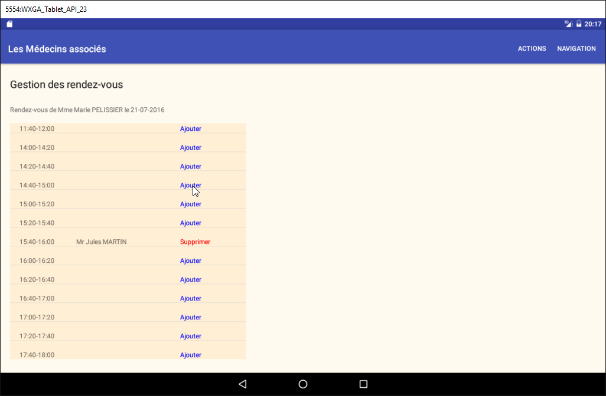
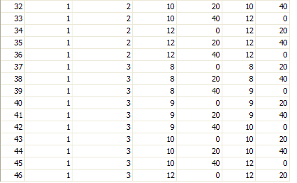
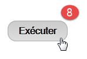
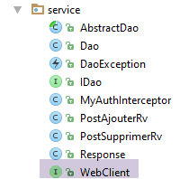
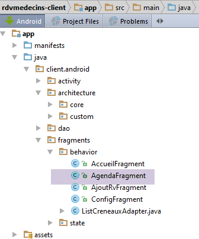
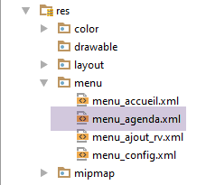

3. Étude de cas - Gestion de rendez-vous
3.1. Le projet
Dans le document [Tutoriel AngularJS / Spring 4], a été développée une application client / serveur pour gérer des rendez-vous de médecins. Par la suite nous référencerons ce document [rdvmedecins-angular]. L'application avait deux types de client :
- un client HTML / CSS / JS ;
- un client Android ;
Le client Android était obtenu de façon automatique à partir de la version HTML du client avec l'outil [Cordova]. Le projet sera ici de recréer ce client Android à la main en utilisant les connaissances acquises dans les chapitres précédents.
On notera une différence importante entre les deux solutions :
- celle que nous allons créer ne sera utilisable que sur les tablettes Android ;
- dans la version [rdvmedecins-angular], le client web mobile (HTML / CSS / JS) est utilisable sur n'importe quelle plate-forme (Android, IoS, Windows) ;
3.2. Les vues du client Android
Il y a quatre vues.
Vue de configuration

Vue du choix du médecin et de la date du rendez-vous

Vue du choix du créneau horaire du rendez-vous

Vue du choix du client du rendez-vous

3.3. L'architecture du projet
On aura une architecture client / serveur analogue à celle de l'exemple [Exemple-15] (cf paragraphe 1.16) de ce document :

Les échanges asynchrones entre le client et le serveur seront gérés avec la bibliothèque RxAndroid.
3.4. La base de données
Elle ne joue pas un rôle fondamental dans ce document. Nous la donnons à titre d'information. On l'appellera [dbrdvmedecins]. C'est une base de données MySQL5 avec quatre tables :
 |
3.4.1. La table [MEDECINS]
Elle contient des informations sur les médecins gérés par l'application [RdvMedecins].
 |  |
- ID : n° identifiant le médecin - clé primaire de la table
- VERSION : n° identifiant la version de la ligne dans la table. Ce nombre est incrémenté de 1 à chaque fois qu'une modification est apportée à la ligne.
- NOM : le nom du médecin
- PRENOM : son prénom
- TITRE : son titre (Melle, Mme, Mr)
3.4.2. La table [CLIENTS]
Les clients des différents médecins sont enregistrés dans la table [CLIENTS] :
 |  |
- ID : n° identifiant le client - clé primaire de la table
- VERSION : n° identifiant la version de la ligne dans la table. Ce nombre est incrémenté de 1 à chaque fois qu'une modification est apportée à la ligne.
- NOM : le nom du client
- PRENOM : son prénom
- TITRE : son titre (Melle, Mme, Mr)
3.4.3. La table [CRENEAUX]
Elle liste les créneaux horaires où les RV sont possibles :
 |
 |  |  |
- ID : n° identifiant le créneau horaire - clé primaire de la table (ligne 8)
- VERSION : n° identifiant la version de la ligne dans la table. Ce nombre est incrémenté de 1 à chaque fois qu'une modification est apportée à la ligne.
- ID_MEDECIN : n° identifiant le médecin auquel appartient ce créneau – clé étrangère sur la colonne MEDECINS(ID).
- HDEBUT : heure début créneau
- MDEBUT : minutes début créneau
- HFIN : heure fin créneau
- MFIN : minutes fin créneau
La seconde ligne de la table [CRENEAUX] (cf [1] ci-dessus) indique, par exemple, que le créneau n° 2 commence à 8 h 20 et se termine à 8 h 40 et appartient au médecin n° 1 (Mme Marie PELISSIER).
3.4.4. La table [RV]
Elle liste les RV pris pour chaque médecin :
 |  |
- ID : n° identifiant le RV de façon unique – clé primaire
- JOUR : jour du RV
- ID_CRENEAU : créneau horaire du RV - clé étrangère sur le champ [ID] de la table [CRENEAUX] – fixe à la fois le créneau horaire et le médecin concerné.
- ID_CLIENT : n° du client pour qui est faite la réservation – clé étrangère sur le champ [ID] de la table [CLIENTS]
Cette table a une contrainte d'unicité sur les valeurs des colonnes jointes (JOUR, ID_CRENEAU) :
Si une ligne de la table[RV] a la valeur (JOUR1, ID_CRENEAU1) pour les colonnes (JOUR, ID_CRENEAU), cette valeur ne peut se retrouver nulle part ailleurs. Sinon, cela signifierait que deux RV ont été pris au même moment pour le même médecin. D'un point de vue programmation Java, le pilote JDBC de la base lance une SQLException lorsque ce cas se produit.
La ligne d'id égal à 3 (cf [1] ci-dessus) signifie qu'un RV a été pris pour le créneau n° 20 et le client n° 4 le 23/08/2006. La table [CRENEAUX] nous apprend que le créneau n° 20 correspond au créneau horaire 16 h 20 - 16 h 40 et appartient au médecin n° 1 (Mme Marie PELISSIER). La table [CLIENTS] nous apprend que le client n° 4 est Melle Brigitte BISTROU.
3.4.5. Génération de la base
Pour créer les tables et les remplir on pourra utiliser le script [dbrdvmedecins.sql] qu'on trouvera dans l'archive des exemples |ICI|.
 |
Avec [WampServer] (cf paragraphe 6.15), on pourra procéder comme suit :
 |  |
- en [1], on clique sur l'icône de [WampServer] et on choisit l'option [PhpMyAdmin] [2],
- en [3], dans la fenêtre qui s'est ouverte, on sélectionne le lien [Bases de données],
 |
- en [4-6], on importe un fichier SQL,
 |  |  |
- en [7], on sélectionne le script SQL et en [8] on l'exécute,
- en [9], les tables de la base ont été créées. On suit l'un des liens,
 |
- en [10], le contenu de la table.
Par la suite, nous ne reviendrons plus sur cette base, mais le lecteur est invité à suivre son évolution au fil des tests surtout lorsque l'application ne marche pas.
3.5. Le serveur web / jSON
Nous nous intéressons ici au serveur [1]. Nous n'allons pas le développer. Celui-ci a été détaillé dans le document [Spring MVC et Thymeleaf par l'exemple]. Le lecteur intéressé pourra s'y reporter. Il a été développé comme celui du serveur de l'exemple 15. Son code source est livré dans les exemples. Nous allons utiliser ici son binaire :
 |
- [rdvmedecins-server-all-1.0.jar] est le binaire du serveur ;
3.5.1. Mise en oeuvre
Dans une fenêtre de commandes, on se place dans le dossier contenant le binaire du serveur :
...\rdvmedecins>dir
Le volume dans le lecteur D s’appelle Données
Le numéro de série du volume est 7A34-AE5F
Répertoire de D:\data\istia-1516\projets\dvp-android-studio\rdvmedecins
09/06/2016 10:50 <DIR> .
09/06/2016 10:50 <DIR> ..
06/07/2014 16:36 7 631 dbrdvmedecins.sql
08/06/2016 16:31 <DIR> rdvmedecins-client
08/06/2016 16:22 <DIR> rdvmedecins-server
08/06/2016 16:23 29 618 709 rdvmedecins-server-all-1.0.jar
puis pour lancer le serveur on tape la commande suivante (le SGBD MySQL doit être déjà lancé) :
...\rdvmedecins>java -jar rdvmedecins-server-all-1.0.jar
. ____ _ __ _ _
/\\ / ___'_ __ _ _(_)_ __ __ _ \ \ \ \
( ( )\___ | '_ | '_| | '_ \/ _` | \ \ \ \
\\/ ___)| |_)| | | | | || (_| | ) ) ) )
' |____| .__|_| |_|_| |_\__, | / / / /
=========|_|==============|___/=/_/_/_/
:: Spring Boot :: (v1.0)
10:55:48.617 [main] INFO rdvmedecins.boot.Boot - Starting Boot v1.0 on st-PC (D:\data\istia-1516\projets\dvp-android-studio\rdvmedecins\rdvmedecins-server-all-1.0.jar started by st in D:\data\istia-1516\projets\dvp-android-studio\rdvmedecins)
10:55:48.621 [main] INFO rdvmedecins.boot.Boot - No active profile set, falling back to default profiles: default
10:55:48.662 [main] INFO o.s.b.c.e.AnnotationConfigEmbeddedWebApplicationContext - Refreshing org.springframework.boot.context.embedded.AnnotationConfigEmbeddedWebApplicationContext@7085bdee: startup date [Thu Jun 09 10:55:48 CEST 2016]; root of context hierarchy
10:55:49.948 [main] INFO o.s.b.c.e.t.TomcatEmbeddedServletContainer - Tomcat initialized with port(s): 8080 (http)
juin 09, 2016 10:55:50 AM org.apache.catalina.core.StandardService startInternal
INFOS: Starting service Tomcat
juin 09, 2016 10:55:50 AM org.apache.catalina.core.StandardEngine startInternal
INFOS: Starting Servlet Engine: Apache Tomcat/8.0.33
juin 09, 2016 10:55:50 AM org.apache.catalina.core.ApplicationContext log
INFOS: Initializing Spring embedded WebApplicationContext
10:55:50.255 [localhost-startStop-1] INFO o.s.web.context.ContextLoader - Root
WebApplicationContext: initialization completed in 1596 ms
...
10:55:55.765 [localhost-startStop-1] INFO o.s.s.web.DefaultSecurityFilterChain
- Creating filter chain: ...]
10:55:55.785 [localhost-startStop-1] INFO o.s.b.c.e.ServletRegistrationBean - Mapping servlet: 'dispatcherServlet' to [/*]
10:55:55.791 [localhost-startStop-1] INFO o.s.b.c.e.FilterRegistrationBean - Mapping filter: 'springSecurityFilterChain' to: [/*]
...
10:55:56.249 [main] INFO o.s.w.s.m.m.a.RequestMappingHandlerMapping - Mapped "{[/getAllCreneaux/{idMedecin}],methods=[GET],produces=[application/json;charset=UTF-8]}" onto public java.lang.String rdvmedecins.controllers.RdvMedecinsController.getAllCreneaux(long,javax.servlet.http.HttpServletResponse,java.lang.String)
throws com.fasterxml.jackson.core.JsonProcessingException
10:55:56.252 [main] INFO o.s.w.s.m.m.a.RequestMappingHandlerMapping - Mapped "{[/getRvMedecinJour/{idMedecin}/{jour}],methods=[GET],produces=[application/json;charset=UTF-8]}" onto public java.lang.String rdvmedecins.controllers.RdvMedecinsController.getRvMedecinJour(long,java.lang.String,javax.servlet.http.HttpServletResponse,java.lang.String) throws com.fasterxml.jackson.core.JsonProcessingException
10:55:56.255 [main] INFO o.s.w.s.m.m.a.RequestMappingHandlerMapping - Mapped "{[/getCreneauById/{id}],methods=[GET],produces=[application/json;charset=UTF-8]}" onto public java.lang.String rdvmedecins.controllers.RdvMedecinsController.getCreneauById(long,javax.servlet.http.HttpServletResponse,java.lang.String) throws
com.fasterxml.jackson.core.JsonProcessingException
10:55:56.257 [main] INFO o.s.w.s.m.m.a.RequestMappingHandlerMapping - Mapped "{[/ajouterRv],methods=[POST],consumes=[application/json;charset=UTF-8],produces=[application/json;charset=UTF-8]}" onto public java.lang.String rdvmedecins.controllers.RdvMedecinsController.ajouterRv(rdvmedecins.models.PostAjouterRv,javax.servlet.http.HttpServletResponse,java.lang.String) throws com.fasterxml.jackson.core.JsonProcessingException
10:55:56.259 [main] INFO o.s.w.s.m.m.a.RequestMappingHandlerMapping - Mapped "{[/getAllClients],methods=[GET],produces=[application/json;charset=UTF-8]}" onto
public java.lang.String rdvmedecins.controllers.RdvMedecinsController.getAllClients(javax.servlet.http.HttpServletResponse,java.lang.String) throws com.fasterxml.jackson.core.JsonProcessingException
10:55:56.261 [main] INFO o.s.w.s.m.m.a.RequestMappingHandlerMapping - Mapped "{[/getClientById/{id}],methods=[GET],produces=[application/json;charset=UTF-8]}"
onto public java.lang.String rdvmedecins.controllers.RdvMedecinsController.getClientById(long,javax.servlet.http.HttpServletResponse,java.lang.String) throws com.fasterxml.jackson.core.JsonProcessingException
10:55:56.264 [main] INFO o.s.w.s.m.m.a.RequestMappingHandlerMapping - Mapped "{[/getMedecinById/{id}],methods=[GET],produces=[application/json;charset=UTF-8]}" onto public java.lang.String rdvmedecins.controllers.RdvMedecinsController.getMedecinById(long,javax.servlet.http.HttpServletResponse,java.lang.String) throws com.fasterxml.jackson.core.JsonProcessingException
10:55:56.266 [main] INFO o.s.w.s.m.m.a.RequestMappingHandlerMapping - Mapped "{[/getRvById/{id}],methods=[GET],produces=[application/json;charset=UTF-8]}" onto public java.lang.String rdvmedecins.controllers.RdvMedecinsController.getRvById(long,javax.servlet.http.HttpServletResponse,java.lang.String) throws com.fasterxml.jackson.core.JsonProcessingException
10:55:56.268 [main] INFO o.s.w.s.m.m.a.RequestMappingHandlerMapping - Mapped "{[/getAllMedecins],methods=[GET],produces=[application/json;charset=UTF-8]}" onto public java.lang.String rdvmedecins.controllers.RdvMedecinsController.getAllMedecins(javax.servlet.http.HttpServletResponse,java.lang.String) throws com.fasterxml.jackson.core.JsonProcessingException
10:55:56.270 [main] INFO o.s.w.s.m.m.a.RequestMappingHandlerMapping - Mapped "{[/supprimerRv],methods=[POST],consumes=[application/json;charset=UTF-8],produces=[application/json;charset=UTF-8]}" onto public java.lang.String rdvmedecins.controllers.RdvMedecinsController.supprimerRv(rdvmedecins.models.PostSupprimerRv,javax.servlet.http.HttpServletResponse,java.lang.String) throws com.fasterxml.jackson.core.JsonProcessingException
10:55:56.273 [main] INFO o.s.w.s.m.m.a.RequestMappingHandlerMapping - Mapped "{[/authenticate],methods=[GET],produces=[application/json;charset=UTF-8]}" onto public java.lang.String rdvmedecins.controllers.RdvMedecinsController.authenticate(javax.servlet.http.HttpServletResponse,java.lang.String) throws com.fasterxml.jackson.core.JsonProcessingException
10:55:56.276 [main] INFO o.s.w.s.m.m.a.RequestMappingHandlerMapping - Mapped "{[/getAgendaMedecinJour/{idMedecin}/{jour}],methods=[GET],produces=[application/json;charset=UTF-8]}" onto public java.lang.String rdvmedecins.controllers.RdvMedecinsController.getAgendaMedecinJour(long,java.lang.String,javax.servlet.http.HttpServletResponse,java.lang.String) throws com.fasterxml.jackson.core.JsonProcessingException
...
10:55:56.681 [main] INFO o.s.b.c.e.t.TomcatEmbeddedServletContainer - Tomcat started on port(s): 8080 (http)
10:55:56.686 [main] INFO rdvmedecins.boot.Boot - Started Boot in 8.231 seconds
Le serveur affiche de nombreux logs. Nous n'avons retenu ci-dessus que ceux utiles à comprendre :
- lignes 14-18 : un serveur Tomcat embarqué est lancé sur le port 8080 de la machine. C'est ce serveur qui exécute l'application web de gestion des rendez-vous. Cette application est en fait un service web / jSON : elle est interrogée via des URL et elle répond en envoyant une chaîne jSON ;
- ligne 24 : le service web est sécurisé avec le frameworl [Spring Security]. On accède aux URL du service web en s'authentifiant ;
- lignes 29-44 : les URL exposées par le service web ;
Nous allons détailler ces dernières.
3.5.2. Sécurisation du service web
Les URL exposées par le service web sont sécurisées. Le serveur attend dans la requête HTTP du client l'entête suivant :
Le code attendu est le codage en base64 [http://fr.wikipedia.org/wiki/Base64] de la chaîne 'utilisateur:motdepasse'. Le service web n'accepte dans son état initial qu'un utilisateur 'admin' avec le mot de passe 'admin'. L'entête ci-dessus devient pour cet utilisateur particulier la ligne suivante :
Afin de pouvoir envoyer cet entête HTTP, nous utilisons le client HTTP [Advanced Rest Client] qui est un plugin du navigateur Chrome (cf paragraphe 6.13). Nous allons tester à la main les différentes URL exposées par le service web afin de comprendre :
- les paramètres attendus par l'URL ;
- la nature exacte de sa réponse ;
3.5.3. Liste des médecins
L'URL [/getAllMedecins] permet d'obtenir la liste des médecins :
 |
- en [1], l'URL interrogée ;
- en [2], la méthode HTTP utilisée pour cette interrogation ;
- en [3], l'entête HTTP de sécurité de l'utilisateur (admin, admin) ;
- en [4], on envoie la requête HTTP ;
La réponse du serveur est la suivante :
 |
- en [5], la réponse jSON du serveur, mise en forme ;
 |
- en [6], la même réponse à l'état brut ;
La forme [5] permet de mieux voir la structure de la réponse. Toutes les réponses du service web sont une instance de la classe [Response] suivante :
package rdvmedecins.android.dao.service;
import java.util.List;
public class Response<T> {
// ----------------- propriétés
// statut de l'opération
private int status;
// les éventuels messages d'erreur
private List<String> messages;
// le corps de la réponse
private T body;
// constructeurs
public Response() {
}
public Response(int status, List<String> messages, T body) {
this.status = status;
this.messages = messages;
this.body = body;
}
// getters et setters
...
}
- ligne 9 : le statut de la réponse. La valeur 0 veut dire qu'il n'y a pas eu d'erreur, sinon il y a eu erreur ;
- ligne 11 : une liste de messages d'erreur s'il y a eu erreur ;
- ligne 13 : la réponse réellement attendue par le client ;
La réponse à l'URL [/getAllMedecins] est la chaîne jSON d'un objet de type [Response<List<Medecin>>]. La classe [Medecin] est la suivante :
package rdvmedecins.android.dao.entities;
public class Medecin extends Personne {
// constructeur par défaut
public Medecin() {
}
// constructeur avec paramètres
public Medecin(String titre, String nom, String prenom) {
super(titre, nom, prenom);
}
public String toString() {
return String.format("Medecin[%s]", super.toString());
}
}
Ligne 3, la classe [Medecin] étend la classe [Personne] suivante :
package rdvmedecins.android.dao.entities;
public class Personne extends AbstractEntity {
// attributs d'une personne
private String titre;
private String nom;
private String prenom;
// constructeur par défaut
public Personne() {
}
// constructeur avec paramètres
public Personne(String titre, String nom, String prenom) {
this.titre = titre;
this.nom = nom;
this.prenom = prenom;
}
// toString
public String toString() {
return String.format("Personne[%s, %s, %s, %s, %s]", id, version, titre, nom, prenom);
}
// getters et setters
...
}
Ligne 3, la classe [Personne] étend la classe [AbstractEntity] suivante :
package rdvmedecins.android.dao.entities;
import java.io.Serializable;
public class AbstractEntity implements Serializable {
private static final long serialVersionUID = 1L;
protected Long id;
protected Long version;
@Override
public int hashCode() {
int hash = 0;
hash += (id != null ? id.hashCode() : 0);
return hash;
}
// initialisation
public AbstractEntity build(Long id, Long version) {
this.id = id;
this.version = version;
return this;
}
@Override
public boolean equals(Object entity) {
String class1 = this.getClass().getName();
String class2 = entity.getClass().getName();
if (!class2.equals(class1)) {
return false;
}
AbstractEntity other = (AbstractEntity) entity;
return this.id == other.id;
}
// getters et setters
...
}
Au final, la structure d'un objet [Medecin] est la suivante :
[Long id; Long version; String titre; String nom; String prenom;]
et celle de [Response<List<Medecin>>] la suivante :
Par la suite, nous utiliserons ces définitions raccourcies pour caractériser la réponse du serveur. Par ailleurs, pendant un certain temps, nous ne montrerons plus de copies d'écran. Il suffit de répéter ce que nous venons de voir. Nous reviendrons aux copies d'écran lorsqu'il faudra faire une requête POST. Nous présenterons également un exemple d'exécution sous la forme suivante :
3.5.4. Liste des clients
| |
|
Exemple :
3.5.5. Liste des créneaux d'un médecin
|
- [idMedecin] : identifiant du médecin dont on veut les créneaux horaires de consultation ;
- [hdebut] : heure de début de la consultation ;
- [mdebut] : minutes de début de la consultation ;
- [hfin] : heure de fin de la consultation ;
- [mfin] : minutes de fin de la consultation ;
Pour un créneau entre 10h20 et 10h40 on aura [hdebut, mdebut, hfin, mfin]=[10, 20, 10, 40].
Exemple :
3.5.6. Liste des rendez-vous d'un médecin
|
- [idMedecin] : identifiant du médecin dont on veut les rendez-vous ;
- URL [jour] : jour des rendez-vous sous la forme 'aaaa-mm-jj' ;
- Réponse [jour] : idem mais sous la forme d'une date Java ;
- [client] : le client du rendez-vous. Sa structure a été décrite précédemment ;
- [idClient] : l'identifiant du client ;
- [creneau] : le créneau du rendez-vous. Sa structure a été décrite précédemment ;
- [idCreneau] : l'identifiant du créneau ;
Exemple :
3.5.7. L'agenda d'un médecin
|
- [idMedecin] : identifiant du médecin dont on veut les rendez-vous ;
- URL [jour] : jour des rendez-vous sous la forme 'aaaa-mm-jj' ;
- [agenda] : agenda du médecin ;
- [medecin] : le médecin concerné. Sa structure a été définie précédemment ;
- Réponse [jour] : le jour de l'agenda sous la forme d'une date Java ;
- [creneauxMedecinJour] : un tableau d'éléments de type [CreneauMedecinJour] ;
- [creneau] : un créneau. Sa structure a été décrite précédemment ;
- [rv] : un rendez-vous. Sa structure a été décrite précédemment ;
Exemple :
|
On a mis en exergue le cas où il y a un rendez-vous dans le créneau et le cas où il n'y en a pas.
3.5.8. Obtenir un médecin par son identifiant
|
- [idMedecin] : l'identifiant du médecin ;
Exemple 1 :
Exemple 2 :
3.5.9. Obtenir un client par son identifiant
|
- [idClient] : l'identifiant du client ;
Exemple 1 :
Exemple 2 :
3.5.10. Obtenir un créneau par son identifiant
|
- [idCreneau] : l'identifiant du créneau ;
Exemple 1 :
On remarquera que dans la réponse, il n'y a pas le médecin propriétaire du créneau mais seulement son identifiant.
Exemple 2 :
3.5.11. Obtenir un rendez-vous par son identifiant
|
- [idRv] : l'identifiant du rendez-vous ;
Exemple 1 :
On remarquera que dans la réponse, il n'y a ni le client, ni le créneau du rendez-vous mais seulements leurs identifiants.
Exemple 2 :
3.5.12. Ajouter un rendez-vous
L'URL [/ajouterRv] permet d'ajouter un rendez-vous. Les informations nécessaires à cet ajout (le jour, le créneau et le client) sont transmises via une requête HTTP POST. Nous montrons comment réaliser cette requête avec l'outil [Advanced Rest Client].

- en [1], l'URL interrogée ;
- en [2], elle est interrogée par un POST ;
- en [3-4], on précise au serveur que les valeurs qui lui sont postées le sont sous la forme d'une chaîne jSON ;
- en [4], l'entête HTTP de l'authentification ;
- en [5], les informations transmises par le POST. C'est une chaîne jSON contenant :
- [jour] : le jour du rendez-vous sous la forme 'aaaa-mm-jj',
- [idClient] : l'identifiant du client pour lequel le rendez-vous est pris,
- [idCreneau] : l'identifiant du créneau horaire du rendez-vous. Comme un créneau horaire appartient à un médecin précis, on désigne par là également le médecin ;
- en [6], on envoie la requête ;
La chaîne jSON qui est postée est celle de l'objet de type [PostAjouterRv] suivant :
public class PostAjouterRv {
// données du post
private String jour;
private long idClient;
private long idCreneau;
// constructeurs
public PostAjouterRv() {
}
public PostAjouterRv(String jour, long idCreneau, long idClient) {
this.jour = jour;
this.idClient = idClient;
this.idCreneau = idCreneau;
}
// getters et setters
...
}
La réponse du serveur est de type [Response<Rv>] [int status; List<String> messages; Rv rv] où [rv] est le rendez-vous ajouté.
La réponse du serveur à la requête plus haut est la suivante :
 |
On notera ci-dessus que certaines informations ne sont pas renseignées [idClient, idCreneau] mais on les trouve dans les champs [client] et [creneau]. L'information importante est l'identifiant du rendez-vous ajouté (209). Le service web aurait pu se contenter de renvoyer cette seule information.
3.5.13. Supprimer un rendez-vous
Cette opération se fait également par un POST :
|
La valeur postée est la chaîne jSON d'un objet de type [PostSupprimerRv] suivant :
public class PostSupprimerRv {
// données du post
private long idRv;
// constructeurs
public PostSupprimerRv() {
}
public PostSupprimerRv(long idRv) {
this.idRv = idRv;
}
// getters et setters
...
}
- ligne 4, [idRv] est l'identifiant du rendez-vous à supprimer.
Exemple 1 :
Le rendez-vous de n° 209 a bien été supprimé car [status=0].
Exemple 2 :
3.6. Le client Android
Maintenant que le serveur [1] a été détaillé et est opérationnel, nous allons étudier le client Android [2].
3.6.1. Architecture du projet Android Studio
Le projet reprend l'architecture du projet [client-android-skel] (cf paragraphe 1.17). Dans l'architecture ci-dessus du client Android, on distingue trois blocs :
- la couche [DAO] chargée de la communication avec le service web ;
- les [vues] chargées de la communication avec l'utilisateur ;
- l'[activité] qui fait le lien entre les deux blocs précédents. Les vues n'ont pas connaissance de la couche [DAO]. Elles ne communiquent qu'avec l'activité.
Cette architecture est reflétée dans celle du projet Android Studio du client Android :
 |
- le package [activity] implémente l'activité ;
- le package [architecture] reprend les éléments d'architecture que nous avons développés précédement ;
- le package [dao] implémente la couche [DAO] ;
- le package [fragments] implémente les [vues] ;
3.6.2. Personnalisation du projet
 |
Le dossier [architecture / custom] contient les éléments personnalisables de l'architecture.
L'interface [IMainActivity] est la suivante :
package client.android.architecture.custom;
import client.android.architecture.core.ISession;
import client.android.dao.service.IDao;
public interface IMainActivity extends IDao {
// accès à la session
ISession getSession();
// changement de vue
void navigateToView(int position, ISession.Action action);
// gestion de l'attente
void beginWaiting();
void cancelWaiting();
// constantes de l'application -------------------------------------
// mode debug
boolean IS_DEBUG_ENABLED = true;
// délai maximal d'attente de la réponse du serveur
int TIMEOUT = 1000;
// délai d'attente avant exécution de la requête client
int DELAY = 000;
// authentification basique
boolean IS_BASIC_AUTHENTIFICATION_NEEDED = true;
// adjacence des fragments
int OFF_SCREEN_PAGE_LIMIT = 1;
// barre d'onglets
boolean ARE_TABS_NEEDED = false;
// image d'attente
boolean IS_WAITING_ICON_NEEDED = true;
// nombre de fragments de l'application
int FRAGMENTS_COUNT = 4;
// n°s de vue
int VUE_CONFIG = 0;
int VUE_ACCUEIL = 1;
int VUE_AGENDA = 2;
int VUE_AJOUT_RV = 3;
}
- lignes 25, 28 : personnalisation de la couche [DAO] ;
- ligne 31 : cette application fait des accès authentifiés au serveur ;
- ligne 40 : on a besoin d'une image d'attente ;
- ligne 43 : l'application a quatre fragments ;
- lignes 46-49 : les n°s des quatre fragments ;
- ligne 37 : il n'y a pas d'onglets ;
La classe de base [CoreState] des états des fragments sera la suivante :
package client.android.architecture.custom;
import client.android.architecture.core.MenuItemState;
import client.android.fragments.state.AccueilFragmentState;
import client.android.fragments.state.AgendaFragmentState;
import client.android.fragments.state.AjoutRvFragmentState;
import client.android.fragments.state.ConfigFragmentState;
import com.fasterxml.jackson.annotation.JsonIgnoreProperties;
import com.fasterxml.jackson.annotation.JsonSubTypes;
import com.fasterxml.jackson.annotation.JsonTypeInfo;
@JsonIgnoreProperties(ignoreUnknown = true)
@JsonTypeInfo(use = JsonTypeInfo.Id.NAME, include = JsonTypeInfo.As.PROPERTY)
@JsonSubTypes({
@JsonSubTypes.Type(value = AccueilFragmentState.class),
@JsonSubTypes.Type(value = AgendaFragmentState.class),
@JsonSubTypes.Type(value = AjoutRvFragmentState.class),
@JsonSubTypes.Type(value = ConfigFragmentState.class)
}
)
public class CoreState {
// fragment visité ou non
protected boolean hasBeenVisited = false;
// état de l'éventuel menu du fragment
protected MenuItemState[] menuOptionsState;
// getters et setters
...
}
- lignes 15-18 : les quatre fragments ont un état :
 |
Enfin la session contient les données partagées entre fragments :
package client.android.architecture.custom;
import client.android.architecture.core.AbstractSession;
import client.android.dao.entities.AgendaMedecinJour;
import client.android.dao.entities.Client;
import client.android.dao.entities.Medecin;
import client.android.fragments.state.AccueilFragmentState;
import client.android.fragments.state.AgendaFragmentState;
import client.android.fragments.state.AjoutRvFragmentState;
import client.android.fragments.state.ConfigFragmentState;
import java.util.List;
public class Session extends AbstractSession {
// les éléments qui ne peuvent être sérialisés en jSON doivent avoir l'annotation @JsonIgnore
// liste des médecins
private List<Medecin> médecins;
// liste des clients
private List<Client> clients;
// agenda d'un médecin pour un jour donné
private AgendaMedecinJour agenda;
// position de l'élément cliqué dans l'agenda
private int position;
// jour du Rv en notation anglaise "yyyy-MM-dd"
private String dayRv;
// jour du Rv en notation française "dd-MM-yyyy"
private String jourRv;
// getters et setters
...
}
- lignes 17-28 : la session mémorise six informations. Nous expliquerons le rôle de celles-ci lorsque ce sera nécessaire.
3.6.3. La couche [DAO]
 |
 |  |
- en [1], les entités encapsulées dans les réponses du serveur. Elles ont été présentées au paragraphe 3.5 ;
- en [2], les éléments du client gérant les échanges avec le serveur ;
Nous n'allons pas revenir sur les éléments [1]. Ils ont déjà été présentés. Le lecteur est invité à revenir au paragraphe 3.5 si besoin est. Nous allons étudier l'implémentation du package [service]. Cela nous amènera à parler également de l'implémentation des échanges sécurisés entre le client et le serveur.
3.6.3.1. Implémentation des échanges client / serveur
 |
La classe [WebClient] est un composant AA qui décrit :
- les URL exposées par le service web ;
- leurs paramètres ;
- leurs réponses ;
package rdvmedecins.android.dao.service;
import rdvmedecins.android.dao.entities.*;
import org.androidannotations.rest.spring.annotations.*;
import org.androidannotations.rest.spring.api.RestClientRootUrl;
import org.androidannotations.rest.spring.api.RestClientSupport;
import org.springframework.http.converter.json.MappingJackson2HttpMessageConverter;
import org.springframework.web.client.RestTemplate;
import java.util.List;
@Rest(converters = {MappingJackson2HttpMessageConverter.class})
public interface WebClient extends RestClientRootUrl, RestClientSupport {
// RestTemplate
public void setRestTemplate(RestTemplate restTemplate);
// liste des médecins
@Get("/getAllMedecins")
public Response<List<Medecin>> getAllMedecins();
// liste des clients
@Get("/getAllClients")
public Response<List<Client>> getAllClients();
// liste des créneaux d'un médecin
@Get("/getAllCreneaux/{idMedecin}")
public Response<List<Creneau>> getAllCreneaux(@Path long idMedecin);
// liste des rendez-vous d'un médecin
@Get("/getRvMedecinJour/{idMedecin}/{jour}")
public Response<List<Rv>> getRvMedecinJour(@Path long idMedecin, @Path String jour);
// Client
@Get("/getClientById/{id}")
public Response<Client> getClientById(@Path long id);
// Médecin
@Get("/getMedecinById/{id}")
public Response<Medecin> getMedecinById(@Path long id);
// Rv
@Get("/getRvById/{id}")
public Response<Rv> getRvById(@Path long id);
// Créneau
@Get("/getCreneauById/{id}")
public Response<Creneau> getCreneauById(@Path long id);
// ajouter un RV
@Post("/ajouterRv")
public Response<Rv> ajouterRv(@Body PostAjouterRv post);
// supprimer un Rv
@Post("/supprimerRv")
public Response<Rv> supprimerRv(@Body PostSupprimerRv post);
// obtenir l'agenda d'un médecin
@Get(value = "/getAgendaMedecinJour/{idMedecin}/{jour}")
public Response<AgendaMedecinJour> getAgendaMedecinJour(@Path long idMedecin, @Path String jour);
}
- lignes 19-60 : on retrouve toutes les URL étudiées au paragraphe 3.5 ;
- ligne 16 : le composant [RestTemplate] de [Spring Android] sur lequel repose la communication client / serveur ;
3.6.3.2. L'interface [IDao]
 |
L'interface [IDao] de la couche [DAO] est la suivante :
package rdvmedecins.android.dao.service;
import rdvmedecins.android.dao.entities.*;
import rx.Observable;
import java.util.List;
public interface IDao {
// Url du service web
public void setUrlServiceWebJson(String url);
// utilisateur
public void setUser(String user, String mdp);
// timeout du client
public void setTimeout(int timeout);
// liste des clients
public Observable<List<Client>> getAllClients();
// liste des Médecins
public Observable<List<Medecin>> getAllMedecins();
// liste des créneaux horaires d'un médecin
public Observable<List<Creneau>> getAllCreneaux(long idMedecin);
// liste des Rv d'un médecin, un jour donné
public Observable<List<Rv>> getRvMedecinJour(long idMedecin, String jour);
// trouver un client identifié par son id
public Observable<Client> getClientById(long id);
// trouver un médecin identifié par son id
public Observable<Medecin> getMedecinById(long id);
// trouver un Rv identifié par son id
public Observable<Rv> getRvById(long id);
// trouver un créneau horaire identifié par son id
public Observable<Creneau> getCreneauById(long id);
// ajouter un RV
public Observable<Rv> ajouterRv(String jour, long idCreneau, long idClient);
// supprimer un RV
public Observable<Rv> supprimerRv(long idRv);
// metier
public Observable<AgendaMedecinJour> getAgendaMedecinJour(long idMedecin, String jour);
// mode debug
void setDebugMode(boolean isDebugEnabled);
}
- ligne 10 : pour fixer l'URL du service web / jSON ;
- ligne 13 : pour fixer l'utilisateur de la communication client / serveur. [user] est l'identifiant de l'utilisateur, [mdp] son mot de passe ;
- ligne 16 : pour fixer un délai d'attente maximal de la réponse du serveur ;
- lignes 18-49 : à chaque URL exposée par le service web, correspond une méthode. Elles reprennent la signature des méthodes de mêmes noms du composant AA [WebClient] ;
- ligne 52 : pour contrôler le mode debug de la couche [DAO] ;
3.6.3.3. La classe [Dao]
 |
L'implémentation [DAO] de l'interface [IDao] précédente est la suivante :
package client.android.dao.service;
import android.util.Log;
import client.android.dao.entities.*;
import org.androidannotations.annotations.AfterInject;
import org.androidannotations.annotations.Bean;
import org.androidannotations.annotations.EBean;
import org.androidannotations.rest.spring.annotations.RestService;
import org.springframework.http.client.ClientHttpRequestInterceptor;
import org.springframework.http.client.SimpleClientHttpRequestFactory;
import org.springframework.http.converter.json.MappingJackson2HttpMessageConverter;
import org.springframework.web.client.RestTemplate;
import rx.Observable;
import java.util.ArrayList;
import java.util.List;
@EBean(scope = EBean.Scope.Singleton)
public class Dao extends AbstractDao implements IDao {
// client du service web
@RestService
protected WebClient webClient;
// sécurité
@Bean
protected MyAuthInterceptor authInterceptor;
// le RestTemplate
private RestTemplate restTemplate;
// factory du RestTemplate
private SimpleClientHttpRequestFactory factory;
@AfterInject
public void afterInject() {
...
}
@Override
public void setUrlServiceWebJson(String url) {
...
}
@Override
public void setUser(String user, String mdp) {
...
}
@Override
public void setTimeout(int timeout) {
...
}
@Override
public void setBasicAuthentification(boolean isBasicAuthentificationNeeded) {
if (isDebugEnabled) {
Log.d(className, String.format("setBasicAuthentification thread=%s, isBasicAuthentificationNeeded=%s", Thread.currentThread().getName(), isBasicAuthentificationNeeded));
}
// intercepteur d'authentification ?
if (isBasicAuthentificationNeeded) {
// on ajoute l'intercepteur d'authentification
List<ClientHttpRequestInterceptor> interceptors = new ArrayList<ClientHttpRequestInterceptor>();
interceptors.add(authInterceptor);
restTemplate.setInterceptors(interceptors);
}
}
// méthodes privées -------------------------------------------------
private void log(String message) {
if (isDebugEnabled) {
Log.d(className, message);
}
}
// implémentation de l'interface IDao --------------------------------------------------------------------
@Override
public Observable<Response<List<Client>>> getAllClients() {
// log
log("getAllClients");
// résultat
return getResponse(new IRequest<Response<List<Client>>>() {
@Override
public Response<List<Client>> getResponse() {
return webClient.getAllClients();
}
});
}
@Override
public Observable<Response<List<Medecin>>> getAllMedecins() {
// log
log("getAllMedecins");
// résultat
return getResponse(new IRequest<Response<List<Medecin>>>() {
@Override
public Response<List<Medecin>> getResponse() {
return webClient.getAllMedecins();
}
});
}
@Override
public Observable<Response<List<Creneau>>> getAllCreneaux(final long idMedecin) {
// log
log("getAllCreneaux");
// résultat
return getResponse(new IRequest<Response<List<Creneau>>>() {
@Override
public Response<List<Creneau>> getResponse() {
return webClient.getAllCreneaux(idMedecin);
}
});
}
@Override
public Observable<Response<List<Rv>>> getRvMedecinJour(final long idMedecin, final String jour) {
// log
log("getRvMedecinJour");
// résultat
return getResponse(new IRequest<Response<List<Rv>>>() {
@Override
public Response<List<Rv>> getResponse() {
return webClient.getRvMedecinJour(idMedecin, jour);
}
});
}
@Override
public Observable<Response<Client>> getClientById(final long id) {
// log
log("getClientById");
// résultat
return getResponse(new IRequest<Response<Client>>() {
@Override
public Response<Client> getResponse() {
return webClient.getClientById(id);
}
});
}
@Override
public Observable<Response<Medecin>> getMedecinById(final long id) {
// log
log("getMedecinById");
// résultat
return getResponse(new IRequest<Response<Medecin>>() {
@Override
public Response<Medecin> getResponse() {
return webClient.getMedecinById(id);
}
});
}
@Override
public Observable<Response<Rv>> getRvById(final long id) {
// log
log("getRvById");
// résultat
return getResponse(new IRequest<Response<Rv>>() {
@Override
public Response<Rv> getResponse() {
return webClient.getRvById(id);
}
});
}
@Override
public Observable<Response<Creneau>> getCreneauById(final long id) {
// log
log("getCreneauById");
// résultat
return getResponse(new IRequest<Response<Creneau>>() {
@Override
public Response<Creneau> getResponse() {
return webClient.getCreneauById(id);
}
});
}
@Override
public Observable<Response<Rv>> ajouterRv(final String jour, final long idCreneau, final long idClient) {
// log
log("ajouterRv");
// résultat
return getResponse(new IRequest<Response<Rv>>() {
@Override
public Response<Rv> getResponse() {
return webClient.ajouterRv(new PostAjouterRv(jour, idCreneau, idClient));
}
});
}
@Override
public Observable<Response<Rv>> supprimerRv(final long idRv) {
// log
log("supprimerRv");
// résultat
return getResponse(new IRequest<Response<Rv>>() {
@Override
public Response<Rv> getResponse() {
return webClient.supprimerRv(new PostSupprimerRv(idRv));
}
});
}
@Override
public Observable<Response<AgendaMedecinJour>> getAgendaMedecinJour(final long idMedecin, final String jour) {
// log
log("getAgendaMedecinJour");
// résultat
return getResponse(new IRequest<Response<AgendaMedecinJour>>() {
@Override
public Response<AgendaMedecinJour> getResponse() {
return webClient.getAgendaMedecinJour(idMedecin, jour);
}
});
}
}
- lignes 18-72 : sont celles présentes de base dans la classe [Dao] du projet [client-android-skel] ;
- lignes 74-216 : implémentation de l'interface [IDao]. Les méthodes qui interrogent les URL exposées par le service web délèguent cette interrogation au composant AA [WebClient]( lignes 22-23) ;
- lignes 58-63 : si les échanges client / serveur sont authentifiés par une autorisation de type basique, on ajoute un intercepteur au composant [RestTemplate]. Ceci va avoir pour effet que toute requête HTTP émise par le composant [RestTemplate] va être interceptée par la classe [MyAuthInterceptor] (lignes 25-26) ;
La classe [MyAuthInterceptor] est la suivante :
package rdvmedecins.android.dao.security;
import org.androidannotations.annotations.Bean;
import org.androidannotations.annotations.EBean;
import org.springframework.http.HttpAuthentication;
import org.springframework.http.HttpBasicAuthentication;
import org.springframework.http.HttpHeaders;
import org.springframework.http.HttpRequest;
import org.springframework.http.client.ClientHttpRequestExecution;
import org.springframework.http.client.ClientHttpRequestInterceptor;
import org.springframework.http.client.ClientHttpResponse;
import java.io.IOException;
@EBean(scope = EBean.Scope.Singleton)
public class MyAuthInterceptor implements ClientHttpRequestInterceptor {
// utilisateur
private String user;
private String mdp;
public ClientHttpResponse intercept(HttpRequest request, byte[] body, ClientHttpRequestExecution execution) throws IOException {
HttpHeaders headers = request.getHeaders();
HttpAuthentication auth = new HttpBasicAuthentication(user, mdp);
headers.setAuthorization(auth);
return execution.execute(request, body);
}
public void setUser(String user, String mdp) {
this.user = user;
this.mdp = mdp;
}
}
- ligne 15 : la classe [MyAuthInterceptor] est un composant AA de type [singleton] ;
- ligne 16 : la classe [MyAuthInterceptor] étend l'interface Spring [ClientHttpRequestInterceptor]. Cette interace a une méthode, la méthode [intercept] de la ligne 22. On étend cette interface pour intercepter toute requête HTTP du client. La méthode [intercept] reçoit trois paramètres ;
- [HtpRequest request] : la requête HTTP interceptée,
- [byte[] body] : son corps si elle en a un (des valeurs postées par exemple),
- [ClientHttpRequestExecution execution] : le composant Spring qui exécute la requête ;
Nous interceptons toutes les requêtes HTTP du client Android pour lui ajouter l'entête HTTP d'authentification présenté au paragraphe 3.5.
- ligne 23 : nous récupérons les entêtes HTTP de la requête interceptée ;
- ligne 24 : nous créons l'entête HTTP d'authentification. Le mode d'authentification utilisé (codage base64 de la chaîne 'user:mdp') est fourni par la classe Spring [HttpBasicAuthentication] ;
- ligne 25 : l'entête d'authentification que nous venons de créer est ajouté aux entêtes actuels de la requête interceptée ;
- ligne 26 : on poursuit l'exécution de la requête interceptée. Si nous résumons, la requête interceptée a été enrichie de l'entête d'authentification ;
Les implémentations des méthodes de l'interface [IDao] sont toutes faites sur le même modèle. Prenons l'exemple de la méthode [getAgendaMedecinJour] :
@Override
public Observable<Response<AgendaMedecinJour>> getAgendaMedecinJour(final long idMedecin, final String jour) {
// log
log("getAgendaMedecinJour");
// résultat
return getResponse(new IRequest<Response<AgendaMedecinJour>>() {
@Override
public Response<AgendaMedecinJour> getResponse() {
return webClient.getAgendaMedecinJour(idMedecin, jour);
}
});
}
- ligne 2 : la méthode attend deux paramètres :
- [idMedecin] : l'identifiant du médecin dont on veut l'agenda ;
- [jour] : le jour pour lequel on veut l'agenda ;
- ligne 6 : on appelle la méthode [getResponse] de la classe parent [AbstractDao]. Cette méthode attend un paramètre de type [IRequest<T>] où T est le type rendu par la méthode [getAgendaMedecinJour] ligne 2, ici [Response<AgendaMedecinJour>]. L'interface [IRequest] n'a qu'une méthode : [getResponse] (ligne 8) ;
- lignes 8-10 : implémentation de la méthode [IRequest.getResponse]. Cette méthode doit rendre le résultat attendu par la méthode [getAgendaMedecinJour] ligne 2 de type [Response<AgendaMedecinJour>] ;
- ligne 9 : la réponse est rendue par la méthode [webClient.getAgendaMedecinJour] :
// obtenir l'agenda d'un médecin
@Get(value = "/getAgendaMedecinJour/{idMedecin}/{jour}")
Response<AgendaMedecinJour> getAgendaMedecinJour(@Path long idMedecin, @Path String jour);
Les paramètres utilisés ligne 9 sont ceux passés à la méthode [getAgendaMedecinJour] ligne 2. Pour cette raison, ces paramètres doivent avoir l'attribut final ;
3.6.4. L'activité [MainActivity]
Serveur  |
 |
La classe [MainActivity] est la suivante :
package client.android.activity;
import android.util.Log;
import client.android.architecture.core.AbstractActivity;
import client.android.architecture.core.AbstractFragment;
import client.android.architecture.custom.IMainActivity;
import client.android.dao.entities.*;
import client.android.dao.service.Dao;
import client.android.dao.service.IDao;
import client.android.dao.service.Response;
import client.android.fragments.behavior.AccueilFragment_;
import client.android.fragments.behavior.AgendaFragment_;
import client.android.fragments.behavior.AjoutRvFragment_;
import client.android.fragments.behavior.ConfigFragment_;
import org.androidannotations.annotations.Bean;
import org.androidannotations.annotations.EActivity;
import rx.Observable;
import java.util.List;
@EActivity
public class MainActivity extends AbstractActivity {
// couche [DAO]
@Bean(Dao.class)
protected IDao dao;
// classe parent ---------------------------------------
@Override
protected void onCreateActivity() {
// log
if (IS_DEBUG_ENABLED) {
Log.d(className, "onCreateActivity");
}
}
@Override
protected IDao getDao() {
return dao;
}
@Override
protected AbstractFragment[] getFragments() {
AbstractFragment[] fragments= new AbstractFragment[]{new ConfigFragment_(), new AccueilFragment_(), new AgendaFragment_(), new AjoutRvFragment_()};
return fragments;
}
@Override
protected CharSequence getFragmentTitle(int position) {
return null;
}
@Override
protected void navigateOnTabSelected(int position) {
}
@Override
protected int getFirstView() {
return IMainActivity.VUE_CONFIG;
}
// interface IDao -----------------------------------------------------
...
@Override
public Observable<Response<List<Client>>> getAllClients() {
return dao.getAllClients();
}
@Override
public Observable<Response<List<Medecin>>> getAllMedecins() {
return dao.getAllMedecins();
}
@Override
public Observable<Response<List<Creneau>>> getAllCreneaux(long idMedecin) {
return dao.getAllCreneaux(idMedecin);
}
@Override
public Observable<Response<List<Rv>>> getRvMedecinJour(long idMedecin, String jour) {
return dao.getRvMedecinJour(idMedecin, jour);
}
@Override
public Observable<Response<Client>> getClientById(long id) {
return dao.getClientById(id);
}
@Override
public Observable<Response<Medecin>> getMedecinById(long id) {
return dao.getMedecinById(id);
}
@Override
public Observable<Response<Rv>> getRvById(long id) {
return dao.getRvById(id);
}
@Override
public Observable<Response<Creneau>> getCreneauById(long id) {
return dao.getCreneauById(id);
}
@Override
public Observable<Response<Rv>> ajouterRv(String jour, long idCreneau, long idClient) {
return dao.ajouterRv(jour, idCreneau, idClient);
}
@Override
public Observable<Response<Rv>> supprimerRv(long idRv) {
return dao.supprimerRv(idRv);
}
@Override
public Observable<Response<AgendaMedecinJour>> getAgendaMedecinJour(long idMedecin, String jour) {
return dao.getAgendaMedecinJour(idMedecin, jour);
}
}
- lignes 21-66 : ces lignes sont fournies de base dans le modèle [client-android-skel] ;
- lignes 66-119 : implémentation de l'interface [IDao]. Toutes les méthodes délèguent le travail à la couche [DAO] de la ligne 26 ;
- lignes 42-46 : la méthode [getFragments] rend le tableau des quatre fragments de l'application ;
- lignes 58-61 : la vue de configuration est la 1ère vue à afficher lorsque l'application démarre ;
3.6.5. La session
 |
La classe [Session] sert à mémoriser les informations qui doivent être transmises entre fragments. Elle est la suivante :
package rdvmedecins.android.architecture;
import rdvmedecins.android.dao.entities.AgendaMedecinJour;
import rdvmedecins.android.dao.entities.Client;
import rdvmedecins.android.dao.entities.Medecin;
import org.androidannotations.annotations.EBean;
import java.util.List;
@EBean(scope = EBean.Scope.Singleton)
public class Session {
// liste des médecins
private List<Medecin> médecins;
// liste des clients
private List<Client> clients;
// agenda
private AgendaMedecinJour agenda;
// position de l'élément cliqué dans l'agenda
private int position;
// jour du Rv en notation anglaise "yyyy-MM-dd"
private String dayRv;
// jour du Rv en notation française "dd-MM-yyyy"
private String jourRv;
// getters et setters
...
}
- ligne 10 : la classe [Session] est un composant AA instancié en un unique exemplaire ;
- lignes 12-15 : on supposera dans cette étude de cas, que les listes de médecins et de clients ne changent pas. On les demandera au démarrage de l'application et on les stockera dans la session pour que les fragments puissent les utiliser ;
- lignes 20-23 : le jour souhaité pour un rendez-vous. Il est manipulé sous deux formes, en notation française (ligne 23) au sein du client Android, en notation anglaise (ligne 21) pour les échanges avec le serveur ;
- ligne 19 : la position de l'élément cliqué (lien ajouter / supprimer) sur l'agenda ;
3.6.6. Gestion de la vue de configuration
3.6.6.1. La vue
La vue de configuration est la vue affichée au démarrage de l'application :

Les éléments de l'interface visuelle sont les suivants :
3.6.6.2. Le fragment
La vue de configuration est gérée par le fragment [ConfigFragment] suivant :
 |
package client.android.fragments.behavior;
import android.util.Log;
import android.view.View;
import android.widget.Button;
import android.widget.EditText;
import android.widget.TextView;
import client.android.R;
import client.android.architecture.core.AbstractFragment;
import client.android.architecture.core.ISession;
import client.android.architecture.core.MenuItemState;
import client.android.architecture.custom.CoreState;
import client.android.architecture.custom.IMainActivity;
import client.android.dao.entities.Client;
import client.android.dao.entities.Medecin;
import client.android.dao.service.Response;
import client.android.fragments.state.ConfigFragmentState;
import org.androidannotations.annotations.*;
import rx.functions.Action1;
import java.net.URI;
import java.util.List;
@EFragment(R.layout.config)
@OptionsMenu(R.menu.menu_config)
public class ConfigFragment extends AbstractFragment {
// les éléments de l'interface visuelle
@ViewById(R.id.edt_urlServiceRest)
protected EditText edtUrlServiceRest;
@ViewById(R.id.txt_errorUrlServiceRest)
protected TextView txtErrorUrlServiceRest;
@ViewById(R.id.txt_errorUtilisateur)
protected TextView txtErrorUtilisateur;
@ViewById(R.id.edt_utilisateur)
protected EditText edtUtilisateur;
@ViewById(R.id.edt_mdp)
protected EditText edtMdp;
// les saisies
private String urlServiceRest;
private String utilisateur;
private String mdp;
// validation de la page
@OptionsItem(R.id.actionValider)
protected void doValider() {
...
}
..
// implémentation méthodes classe parent -------------------------------------------
...
}
- ligne 25 : le fragment est associé au menu [menu_config] suivant :
 |
<menu xmlns:android="http://schemas.android.com/apk/res/android"
xmlns:app="http://schemas.android.com/apk/res-auto"
xmlns:tools="http://schemas.android.com/tools"
tools:context=".activity.MainActivity1">
<item
android:id="@+id/menuActions"
app:showAsAction="ifRoom"
android:title="@string/menuActions">
<menu>
<item
android:id="@+id/actionValider"
android:title="@string/actionValider"/>
<item
android:id="@+id/actionAnnuler"
android:title="@string/actionAnnuler"/>
</menu>
</item>
</menu>
- lignes 28-38 : les éléments de l'interface visuelle ;
- lignes 41-43 : les trois saisies du formulaire ;
Le clic sur l'option de menu [Valider] est géré par la méthode [doValider] :
// validation de la page
@OptionsItem(R.id.actionValider)
protected void doValider() {
// on cache les éventuels msg d'erreur précédents
txtErrorUrlServiceRest.setVisibility(View.INVISIBLE);
txtErrorUtilisateur.setVisibility(View.INVISIBLE);
// on teste la validité des saisies
if (!isPageValid()) {
return;
}
// on renseigne l'URL du service web
mainActivity.setUrlServiceWebJson(urlServiceRest);
// on renseigne l'utilisateur
mainActivity.setUser(utilisateur, mdp);
// début de l'attente - on va lancer 2 tâches asynchrones
beginWaiting(2);
// médecins
executeInBackground(mainActivity.getAllMedecins(), new Action1<Response<List<Medecin>>>() {
@Override
public void call(Response<List<Medecin>> responseMedecins) {
// on consomme la réponse
consumeMedecins(responseMedecins);
}
});
// clients
executeInBackground(mainActivity.getAllClients(), new Action1<Response<List<Client>>>() {
@Override
public void call(Response<List<Client>> responseClients) {
// on consomme la réponse
consumeClients(responseClients);
}
});
}
private void consumeMedecins(Response<List<Medecin>> responseMedecins) {
// log
if (isDebugEnabled) {
Log.d(className, "consume médecins");
}
// erreur ?
if (responseMedecins.getStatus() != 0) {
// message
showAlert(responseMedecins.getMessages());
// annulation
doAnnuler();
// retour à l'UI
return;
}
// on mémorise les médecins dans la session
session.setMédecins(responseMedecins.getBody());
}
private void consumeClients(Response<List<Client>> responseClients) {
// log
if (isDebugEnabled) {
Log.d(className, "consume clients");
}
// erreur ?
if (responseClients.getStatus() != 0) {
// message
showAlert(responseClients.getMessages());
// annulation
doAnnuler();
// retour à l'UI
return;
}
// on mémorise les clients dans la session
session.setClients(responseClients.getBody());
}
- lignes 8-10 : la validité des trois saisies du formulaire est testée. Si le formulaire est invalide, on ne va pas plus loin ;
- lignes 11-14 : les saisies nécessaires à la couche [DAO] sont passées à l'activité ;
- ligne 16 : on indique à la classe parent qu'on va lancer deux tâches asynchrones et on prépare l'attente ;
- lignes 17-24 : la liste des médecins est demandée ;
- ligne 18 : la méthode [executeInBackground] attend deux paramètres :
- ligne 18 : le processus à exécuter et observer est fourni par la méthode [mainActivity.getAllMedecins()] ;
- lignes 18-24 : le second paramètre est une instance de type [Action1<T>] où T est le type rendu par le processus observé, ici [Response<List<Medecin>>]
- ligne 22 : lorsqu'on reçoit la réponse, on la passe à la méthode [consumeMedecins] de la ligne 36 ;
- lignes 25-33 : après avoir lancé une 1ère tâche asynchrone, on en lance une seconde pour demander la liste des clients. On va donc avoir deux tâches s'exécutant en parallèle ;
- lignes 36-52 : on a reçu la réponse de la tâche des médecins. On l'exploite ;
- lignes 42-49 : on regarde d'abord si le serveur a signalé une erreur dans le champ [status] de la réponse ;
- ligne 44 : si erreur il y a, on affiche les messages que le serveur a mis dans le champ [messages] de la réponse ;
- ligne 46 : on annule toutes les tâches ;
- ligne 48 : on revient à l'Ui ;
- ligne 51 : s'il n'y a pas eu d'erreur, la liste des médecins est mise en session ;
La validité des saisies (ligne 8) est vérifiée avec la méthode suivante :
private boolean isPageValid() {
// on vérifie la validité des données saisies
boolean erreur;
URI service;
// validité de l'URL du service REST
urlServiceRest = String.format("http://%s", edtUrlServiceRest.getText().toString().trim());
try {
service = new URI(urlServiceRest);
erreur = service.getHost() == null || service.getPort() == -1;
} catch (Exception ex) {
// on note l'erreur
erreur = true;
}
if (erreur) {
// affichage erreur
txtErrorUrlServiceRest.setVisibility(View.VISIBLE);
}
// utilisateur
utilisateur = edtUtilisateur.getText().toString().trim();
if (utilisateur.length() == 0) {
// on affiche l'erreur
txtErrorUtilisateur.setVisibility(View.VISIBLE);
// on note l'erreur
erreur = true;
}
// mot de passe
mdp = edtMdp.getText().toString().trim();
// retour
return !erreur;
}
La méthode [beginWaiting] (ligne 16) est la suivante :
// début de l'attente
protected void beginWaiting(int numberOfRunningTasks) {
// on prépare le lancement des tâches
beginRunningTasks(numberOfRunningTasks);
// état des boutons et menus
setAllMenuOptionsStates(false);
setMenuOptionsStates(new MenuItemState[]{new MenuItemState(R.id.menuActions, true),new MenuItemState(R.id.actionAnnuler, true)});
}
- ligne 4 : on indique à la tâche parent qu'on va lancer [numberOfRunningTasks] tâches ;
- ligne 6 : on rend invisibles toutes les options du menu ;
- ligne 7 : pour ensuite rendre visible l'option [Actions/Annuler] ;
Le clic sur l'option de menu [Annuler] est géré par la méthode [doAnnuler] :
@OptionsItem(R.id.actionAnnuler)
protected void doAnnuler() {
if (isDebugEnabled) {
Log.d(className, "Annulation demandée");
}
// on annule les tâches asynchrones
cancelRunningTasks();
}
- ligne 8 : on demande à la classe parent d'annuler les tâches asynchrones ;
3.6.6.3. Gestion du cycle de vie du fragment
Le fragment a l'état [ConfigFragmentState] suivant :
package client.android.fragments.state;
import client.android.architecture.custom.CoreState;
public class ConfigFragmentState extends CoreState {
// la visibilité des deux messages d'erreur
private boolean txtErrorUrlServiceRestVisible;
private boolean txtErrorUtilisateurVisible;
// getters et setters
...
}
- lorsque la classe parent le lui demandera, le fragment sauvera la visibilité de ses deux messages d'erreur ;
Le cycle de vie du fragment est implémenté de la façon suivante :
// implémentation méthodes classe parent -------------------------------------------
@Override
public CoreState saveFragment() {
// sauvegarde état fragment
ConfigFragmentState state = new ConfigFragmentState();
state.setTxtErrorUrlServiceRestVisible(txtErrorUrlServiceRest.getVisibility() == View.VISIBLE);
state.setTxtErrorUtilisateurVisible(txtErrorUtilisateur.getVisibility() == View.VISIBLE);
return state;
}
@Override
protected int getNumView() {
return IMainActivity.VUE_CONFIG;
}
@Override
protected void initFragment(CoreState previousState) {
}
@Override
protected void initView(CoreState previousState) {
if (previousState == null) {
// 1ère visite
// on cache les messages d'erreur
txtErrorUtilisateur.setVisibility(View.INVISIBLE);
txtErrorUrlServiceRest.setVisibility(View.INVISIBLE);
// menu
initMenu();
}
}
@Override
protected void updateOnSubmit(CoreState previousState) {
}
@Override
protected void updateOnRestore(CoreState previousState) {
// restauration de la visibilité des msg d'erreur
ConfigFragmentState state = (ConfigFragmentState) previousState;
// pas la 1ère visite - on restitue les msg d'erreur
txtErrorUtilisateur.setVisibility(state.isTxtErrorUtilisateurVisible() ? View.VISIBLE : View.INVISIBLE);
txtErrorUrlServiceRest.setVisibility(state.isTxtErrorUrlServiceRestVisible() ? View.VISIBLE : View.INVISIBLE);
}
@Override
protected void notifyEndOfUpdates() {
}
@Override
protected void notifyEndOfTasks(boolean runningTasksHaveBeenCanceled) {
// menu
initMenu();
// vue suivante ?
if (!runningTasksHaveBeenCanceled) {
mainActivity.navigateToView(IMainActivity.VUE_ACCUEIL, ISession.Action.SUBMIT);
}
}
// méthodes privées ------------------------------------------------
private void initMenu(){
// état menu
setAllMenuOptionsStates(true);
setMenuOptionsStates(new MenuItemState[]{new MenuItemState(R.id.actionAnnuler, false)});
}
- lignes 2-9 : lorsque sa classe parent le lui demande, le fragment sauve l'état de ses deux messages d'erreur ;
- lignes 11-14 : le n° du fragment est [IMainActivity.VUE_CONFIG] ;
- lignes 16-19 : exécutées lorsque le fragment est généré la 1ère fois (previousState==null) ou régénéré les fois suivantes (previousState !=null). Ici, il n'y a rien à faire ;
- lignes 21-31 : exécutées lorsque la vue associée au fragment est construite la 1ère fois (previousState==null) ou reconstruite les fois suivantes (previousState !=null) ;
- lignes 24-29 : pour la 1ère visite, on cache les messages d'erreur et on affiche le menu sans l'action [Annuler] (lignes 62-66) ;
- lignes 33-35 : exécutées lorsqu'on arrive au fragment par une opération [SUBMIT]. Ca n'arrive jamais ici ;
- lignes 37-44 : exécutées lorsqu'on arrive au fragment par une opération [NAVIGATION] ou [RESTORE]. On restitue l'état des messages d'erreur à partir de l'état précédent ;
- lignes 47-49 : exécutées lorsque toutes les mises à jour précédentes ont été faites. Il n'y a rien de plus à faire ;
- lignes 51-59 : exécutées lorsque toutes les tâches asynchrones sont terminées ;
- lignes 53-54 : on remet le menu dans son état par défaut ;
- lignes 56-58 : si les tâches se sont terminées normalement, alors on passe à la vue suivante, sinon on reste sur la même vue ;
3.6.7. Gestion de la vue d'accueil
3.6.7.1. La vue
La vue d'accueil est la suivante :

Les éléments de l'interface visuelle sont les suivants :
3.6.7.2. Le fragment
La vue d'accueil est gérée par le fragment [AccueilFragment] suivant :
 |
package client.android.fragments.behavior;
import android.util.Log;
import android.view.View;
import android.widget.ArrayAdapter;
import android.widget.Button;
import android.widget.DatePicker;
import android.widget.Spinner;
import client.android.R;
import client.android.architecture.core.AbstractFragment;
import client.android.architecture.core.ISession;
import client.android.architecture.core.MenuItemState;
import client.android.architecture.custom.CoreState;
import client.android.architecture.custom.IMainActivity;
import client.android.dao.entities.AgendaMedecinJour;
import client.android.dao.entities.Medecin;
import client.android.dao.service.Response;
import client.android.fragments.state.AccueilFragmentState;
import org.androidannotations.annotations.*;
import rx.functions.Action1;
import java.util.Calendar;
import java.util.List;
import java.util.Locale;
@EFragment(R.layout.accueil)
@OptionsMenu(R.menu.menu_accueil)
public class AccueilFragment extends AbstractFragment {
// les éléments de l'interface visuelle
@ViewById(R.id.spinnerMedecins)
protected Spinner spinnerMedecins;
@ViewById(R.id.edt_JourRv)
protected DatePicker edtJourRv;
// données locales
private List<Medecin> medecins;
private Calendar calendrier;
private String[] spinnerMedecinsDataSource;
// validation de la page
@OptionsItem(R.id.actionValider)
protected void doValider() {
...
}
...
// implémentation méthodes classe parent -------------------------------------
...
}
- ligne 26 : le fragment est associé au menu [menu_accueil] suivant :
 |
<menu xmlns:android="http://schemas.android.com/apk/res/android"
xmlns:app="http://schemas.android.com/apk/res-auto"
xmlns:tools="http://schemas.android.com/tools"
tools:context=".activity.MainActivity1">
<item
android:id="@+id/menuActions"
app:showAsAction="ifRoom"
android:title="@string/menuActions">
<menu>
<item
android:id="@+id/actionValider"
android:title="@string/actionValider"/>
<item
android:id="@+id/actionAnnuler"
android:title="@string/actionAnnuler"/>
</menu>
</item>
<item
android:id="@+id/menuNavigation"
app:showAsAction="ifRoom"
android:title="@string/menuNavigation">
<menu>
<item
android:id="@+id/navigationToConfig"
android:title="@string/navigationToConfig"/>
</menu>
</item>
</menu>
- lignes 31-34 : les éléments de l'interface visuelle ;
- ligne 37 : la liste des médecins ;
- ligne 38 : un calendrier ;
- ligne 39 : la source de données du spinner des médecins ;
Le clic sur le lien [Valider] est géré par la méthode [doValider] suivante :
// validation de la page
@OptionsItem(R.id.actionValider)
protected void doValider() {
// on note l'id du médecin sélectionné
Long idMedecin = medecins.get(spinnerMedecins.getSelectedItemPosition()).getId();
// on mémorise le jour dans la session
String jourRv = String.format(new Locale("Fr-fr"), "%02d-%02d-%04d", edtJourRv.getDayOfMonth(), edtJourRv.getMonth() + 1, edtJourRv.getYear());
session.setJourRv(jourRv);
// on passe au format de date yyyy-MM-dd
String dayRv = String.format(new Locale("Fr-fr"), "%04d-%02d-%02d", edtJourRv.getYear(), edtJourRv.getMonth() + 1, edtJourRv.getDayOfMonth());
session.setDayRv(dayRv);
// début de l'attente - on va lancer 1 tâche asynchrone
beginWaiting(1);
// on demande l'agenda du médecin
executeInBackground(mainActivity.getAgendaMedecinJour(idMedecin, dayRv), new Action1<Response<AgendaMedecinJour>>() {
@Override
public void call(Response<AgendaMedecinJour> responseAgendaMedecinJour) {
// on consomme la réponse
consumeAgenda(responseAgendaMedecinJour);
}
});
}
private void consumeAgenda(Response<AgendaMedecinJour> responseAgendaMedecinJour) {
// erreur ?
if (responseAgendaMedecinJour.getStatus() != 0) {
// message
showAlert(responseAgendaMedecinJour.getMessages());
// annulation
doAnnuler();
// retour à l'UI
return;
}
// on met l'agenda dans la session
session.setAgenda(responseAgendaMedecinJour.getBody());
}
- ligne 5 : on récupère l'identifiant du médecin sélectionné ;
- lignes 7-8 : on met en session, au format français, la date choisie ;
- lignes 10-11 : on met en session, au format anglais, la date choisie ;
- ligne 13 : on indique à la classe parent qu'on va lancer une tâche asynchrone et on prépare l'attente ;
- lignes 15-22 : l'agenda du médecin est demandé ;
- ligne 15 : la méthode [executeInBackground] attend deux paramètres :
- ligne 15 : le processus à exécuter et observer est fourni par la méthode [mainActivity.getAgendaMedecinJour(idMedecin, dayRv)] ;
- lignes 15-22 : le second paramètre est une instance de type [Action1<T>] où T est le type rendu par le processus observé, ici [Response<AgendaMedecinJour>]
- ligne 20 : lorsqu'on reçoit la réponse, on la passe à la méthode [consumeAgenda] de la ligne 25 ;
- ligne 15 : la méthode [executeInBackground] attend deux paramètres :
- lignes 25-37 : on a reçu l'agenda du médecin. On l'exploite ;
- lignes 27-34 : on regarde d'abord si le serveur a signalé une erreur dans le champ [status] de la réponse ;
- ligne 29 : si erreur il y a, on affiche les messages que le serveur a mis dans le champ [messages] de la réponse ;
- ligne 31 : on annule toutes les tâches ;
- ligne 33 : on revient à l'Ui ;
- ligne 36 : s'il n'y a pas eu d'erreurs, l'agenda est mis en session ;
La méthode [beginWaiting] (ligne 13) est la suivante :
// début de l'attente
protected void beginWaiting(int numberOfRunningTasks) {
// on prépare le lancement des tâches
beginRunningTasks(numberOfRunningTasks);
// état des boutons et menus
setAllMenuOptionsStates(false);
setMenuOptionsStates(new MenuItemState[]{new MenuItemState(R.id.menuActions, true),new MenuItemState(R.id.actionAnnuler, true)});
}
- ligne 4 : on indique à la tâche parent qu'on va lancer [numberOfRunningTasks] tâches ;
- ligne 6 : on rend invisibles toutes les options du menu ;
- ligne 7 : pour ensuite rendre visible l'option [Actions/Annuler] ;
Le clic sur l'option de menu [Annuler] est géré par la méthode [doAnnuler] :
@OptionsItem(R.id.actionAnnuler)
protected void doAnnuler() {
if (isDebugEnabled) {
Log.d(className, "Annulation demandée");
}
// on annule les tâches asynchrones
cancelRunningTasks();
}
- ligne 8 : on demande à la classe parent d'annuler les tâches asynchrones ;
Le clic sur l'option de menu [Retour à la configuration] est géré de la façon suivante :
@OptionsItem(R.id.navigationToConfig)
protected void navigationToConfig() {
// on navigue vers la vue de configuration
mainActivity.navigateToView(IMainActivity.VUE_CONFIG, ISession.Action.NAVIGATION);
}
- ligne 4 : on navigue vers la vue de configuration avec l'action [NAVIGATION]. Cela signifie qu'on veut retrouver la vue de configuration dans l'état où on l'a laissée ;
3.6.7.3. Gestion du cycle de vie du fragment
Le fragment a l'état [AccueilFragmentState] suivant :
package client.android.fragments.state;
import android.widget.ArrayAdapter;
import client.android.architecture.custom.CoreState;
import client.android.dao.entities.CreneauMedecinJour;
public class AccueilFragmentState extends CoreState {
// état fragment [Accueil]
// position du médecin sélectionné
private int selectedMedecinPosition;
// date sélectionnée
private int year;
private int month;
private int dayOfMonth;
// source de données du spinner des médecins
private String[] spinnerMedecinsDataSource;
// constructeurs
public AccueilFragmentState() {
}
// getters et setters
...
}
- ligne 11 : permet de restituer l'élément sélectionné dans la liste des médecins ;
- lignes 13-15 : permet de restituer la date choisie dans le calendrier ;
- lignes 17 : permet de restituer la source de données de la liste des médecins ;
Le cycle de vie du fragment est implémenté de la façon suivante :
// implémentation méthodes classe parent -------------------------------------
@Override
public CoreState saveFragment() {
// on sauvegarde la vue
AccueilFragmentState state = new AccueilFragmentState();
state.setSelectedMedecinPosition(spinnerMedecins.getSelectedItemPosition());
state.setDayOfMonth(edtJourRv.getDayOfMonth());
state.setMonth(edtJourRv.getMonth());
state.setYear(edtJourRv.getYear());
state.setSpinnerMedecinsDataSource(spinnerMedecinsDataSource);
return state;
}
@Override
protected int getNumView() {
return IMainActivity.VUE_ACCUEIL;
}
@Override
protected void initFragment(CoreState previousState) {
// on récupère les médecins en session
medecins = session.getMédecins();
// 1ère visite ?
if (previousState == null) {
// on construit le tableau affiché par le spinner
spinnerMedecinsDataSource = new String[medecins.size()];
int i = 0;
for (Medecin medecin : medecins) {
spinnerMedecinsDataSource[i] = String.format("%s %s %s", medecin.getTitre(), medecin.getPrenom(), medecin.getNom());
i++;
}
} else {
// pas 1ère visite
AccueilFragmentState state = (AccueilFragmentState) previousState;
spinnerMedecinsDataSource = state.getSpinnerMedecinsDataSource();
}
// le calendrier
calendrier = Calendar.getInstance();
}
@Override
protected void initView(CoreState previousState) {
// on associe le spinner des médecins à sa source de sonnées
ArrayAdapter<String> dataAdapterMedecins = new ArrayAdapter<>(activity, android.R.layout.simple_spinner_item, spinnerMedecinsDataSource);
dataAdapterMedecins.setDropDownViewResource(android.R.layout.simple_spinner_dropdown_item);
spinnerMedecins.setAdapter(dataAdapterMedecins);
// date minimale du calendrier à aujourd'hui
edtJourRv.setMinDate(calendrier.getTimeInMillis());
// 1ère visite ?
if (previousState == null) {
// menu
initMenu();
}
}
@Override
protected void updateOnSubmit(CoreState previousState) {
// menu
initMenu();
}
@Override
protected void updateOnRestore(CoreState previousState) {
// on restaure l'état actuellement en session
AccueilFragmentState state = (AccueilFragmentState) previousState;
// sélection dans spinner des médecins
spinnerMedecins.setSelection(state.getSelectedMedecinPosition());
// calendrier
edtJourRv.updateDate(state.getYear(), state.getMonth(), state.getDayOfMonth());
}
@Override
protected void notifyEndOfUpdates() {
}
@Override
protected void notifyEndOfTasks(boolean runningTasksHaveBeenCanceled) {
// appelée après quand toutes les tâches sont terminées ou annulées
// état menu
initMenu();
// vue suivante ?
if (!runningTasksHaveBeenCanceled) {
mainActivity.navigateToView(IMainActivity.VUE_AGENDA, ISession.Action.SUBMIT);
}
}
// méthodes privées ------------------------------------------------
private void initMenu() {
// état menu
setAllMenuOptionsStates(true);
setMenuOptionsStates(new MenuItemState[]{new MenuItemState(R.id.actionAnnuler, false)});
}
- lignes 2-9 : lorsque sa classe parent le lui demande, le fragment sauve l'état des éléments suivants :
- ligne 6 : la position sélectionnée dans la liste des médecins ;
- lignes 7-9 : le jour du mois, le mois et l'année de la date sélectionnée dans le calendrier ;
- ligne 10 : la source de données du spinner des médecins ;
- lignes 14-17 : le n° du fragment est [IMainActivity.VUE_ACCUEIL] ;
- lignes 19-39 : exécutées lorsque le fragment est généré la 1ère fois (previousState==null) ou régénéré les fois suivantes (previousState !=null) ;
- lignes 25-31 : dans le cas d'une 1ère visite, la source de données du spinner des médecins est construite ;
- lignes 33-35 : pour les autres visites, la source de données du spinner est récupérée dans l'état précédent du fragment ;
- lignes 41-54 : exécutées lorsque la vue associée au fragment est construite la 1ère fois (previousState==null) ou reconstruite les fois suivantes (previousState !=null) ;
- lignes 50-53 : pour la 1ère visite, on affiche le menu sans l'action [Annuler] (lignes 88-92) ;
- lignes 43-48 : pour toutes les visites, 1ère ou pas, on associe le spinner des médecins à sa source (lignes 44-46) et on fixe la date minimale du calendrier à la date d'aujourd'hui (ligne 48) ;
- lignes 56-60 : exécutées lorsqu'on arrive au fragment par une opération [SUBMIT]. On vient alors de la vue [CONFIG]. On met le menu dans son état initial ;
- lignes 62-70 : exécutées lorsqu'on arrive au fragment par une opération [NAVIGATION] ou [RESTORE] ;
- ligne 67 : on repositionne le spinner des médecins sur le dernier médecin sélectionné ;
- ligne 69 : on positionne le calendrier sur la dernière date choisie ;
- lignes 72-74 : exécutées lorsque toutes les mises à jour précédentes ont été faites. Il n'y a rien de plus à faire ;
- lignes 76-85 : exécutées lorsque toutes les tâches asynchrones sont terminées ;
- ligne 80 : on remet le menu dans son état par défaut ;
- lignes 82-84 : si les tâches se sont terminées normalement, alors on passe à la vue suivante, sinon on reste sur la même vue ;
3.6.8. Gestion de la vue Agenda
3.6.8.1. La vue
La vue d'accueil est la suivante :

Les éléments de l'interface visuelle sont les suivants :
3.6.8.2. Le fragment
La vue Agenda est gérée par le fragment [AgendaFragment] suivant :
 |
package client.android.fragments.behavior;
import android.util.Log;
import android.view.View;
import android.widget.ArrayAdapter;
import android.widget.ListView;
import android.widget.TextView;
import android.widget.Toast;
import client.android.R;
import client.android.architecture.core.AbstractFragment;
import client.android.architecture.core.ISession;
import client.android.architecture.core.MenuItemState;
import client.android.architecture.custom.CoreState;
import client.android.architecture.custom.IMainActivity;
import client.android.dao.entities.AgendaMedecinJour;
import client.android.dao.entities.CreneauMedecinJour;
import client.android.dao.entities.Medecin;
import client.android.dao.entities.Rv;
import client.android.dao.service.Response;
import client.android.fragments.state.AgendaFragmentState;
import org.androidannotations.annotations.EFragment;
import org.androidannotations.annotations.OptionsItem;
import org.androidannotations.annotations.OptionsMenu;
import org.androidannotations.annotations.ViewById;
import rx.functions.Action1;
@EFragment(R.layout.agenda)
@OptionsMenu(R.menu.menu_agenda)
public class AgendaFragment extends AbstractFragment {
// les éléments de l'interface visuelle
@ViewById(R.id.txt_titre2_agenda)
protected TextView txtTitre2;
@ViewById(R.id.listViewAgenda)
protected ListView lstCreneaux;
// agenda affiché par le fragment
private AgendaMedecinJour agenda;
// infos ListView des créneaux
private int firstPosition;
private int top;
// rdv supprimé ou non
private boolean rdvSupprimé;
// n° du créneau ajouté ou supprimé
private int numCréneau;
// mise à jour de l'agenda après un ajout / suppression
private void updateAgenda() {
...
}
...
// implémentation méthodes classe parent ------------------------------------------------------
...
}
- ligne 27 : le fragment est associé au menu [menu_agenda] suivant :
 |
<menu xmlns:android="http://schemas.android.com/apk/res/android"
xmlns:app="http://schemas.android.com/apk/res-auto"
xmlns:tools="http://schemas.android.com/tools"
tools:context=".activity.MainActivity1">
<item
android:id="@+id/menuActions"
app:showAsAction="ifRoom"
android:title="@string/menuActions">
<menu>
<item
android:id="@+id/actionAnnuler"
android:title="@string/actionAnnuler"/>
<item
android:id="@+id/actionAgenda"
android:title="@string/actionAgenda"/>
</menu>
</item>
<item
android:id="@+id/menuNavigation"
app:showAsAction="ifRoom"
android:title="@string/menuNavigation">
<menu>
<item
android:id="@+id/navigationToConfig"
android:title="@string/navigationToConfig"/>
<item
android:id="@+id/navigationToAccueil"
android:title="@string/navigationToAccueil"/>
</menu>
</item>
</menu>
- lignes 32-35 : les éléments de l'interface visuelle ;
- lignes 37-45 : données globales aux méthodes ;
3.6.8.2.1. Méthode [updateAgenda]
La (ré)génération de la liste des créneaux de l'agenda est nécessaire à plusieurs endroits du code. Elle a été factorisée dans la méthode privée [updateAgenda] suivante :
// mise à jour de l'agenda après un ajout / suppression
private void updateAgenda() {
// (ré)génération des créneaux de l'agenda
// l'agenda est pris dans la session et mémorisé dans un champ du fragment
agenda = session.getAgenda();
// régénération du ListView des créneaux
ArrayAdapter<CreneauMedecinJour> adapter = new ListCreneauxAdapter(activity, R.layout.creneau_medecin,
agenda.getCreneauxMedecinJour(), this);
lstCreneaux.setAdapter(adapter);
// on se repositionne au bon endroit du ListView
lstCreneaux.setSelectionFromTop(firstPosition, top);
}
- ligne 5 : l'agenda est pris dans la session et mémorisé dans le champ [agenda] du fragment ;
- lignes 7-9 : on définit l'adaptateur du composant [ListView]. Cet adaptateur définit à la fois la source de données du [ListView] et le modèle d'affichage de chaque élément de celle-ci. Nous allons présenter cet adaptateur prochainement ;
- ligne 11 : on revient sur la position précédente de l'agenda. En effet, on ne voit qu'une partie des créneaux de la journée. Si on ajoute / supprime un rendez-vous dans le dernier créneau, le code ci-dessus va rafraîchir la page pour présenter le nouvel agenda. Ce rafraîchissement fait qu'on est alors positionné de nouveau sur le 1er créneau, ce qui n'est pas souhaitable. La ligne 5 remédie à ce problème. On trouvera la description de cette solution à l'URL [http://stackoverflow.com/questions/3014089/maintain-save-restore-scroll-position-when-returning-to-a-listview] ;
La classe [ListCreneauxAdapter] sert à définir une ligne du [ListView] :

On voit ci-dessus, que selon que le créneau a un rendez-vous ou non, l'affichage n'est pas le même. Le code de la classe [ListCreneauxAdapter] est le suivant :
...
public class ListCreneauxAdapter extends ArrayAdapter<CreneauMedecinJour> {
// le tableau des créneaux horaires
private CreneauMedecinJour[] creneauxMedecinJour;
// le contexte d'exécution
private Context context;
// l'id du layout d'affichage d'une ligne de la liste des créneaux
private int layoutResourceId;
// listener des clics
private AgendaFragment vue;
// constructeur
public ListCreneauxAdapter(Context context, int layoutResourceId, CreneauMedecinJour[] creneauxMedecinJour,
AgendaFragment vue) {
super(context, layoutResourceId, creneauxMedecinJour);
// on mémorise les infos
this.creneauxMedecinJour = creneauxMedecinJour;
this.context = context;
this.layoutResourceId = layoutResourceId;
this.vue = vue;
// on trie le tableau des créneaux dans l'ordre des horaires
Arrays.sort(creneauxMedecinJour, new MyComparator());
}
@Override
public View getView(final int position, View convertView, ViewGroup parent) {
...
}
// tri du tableau des créneaux
class MyComparator implements Comparator<CreneauMedecinJour> {
...
}
}
- ligne 3 : la classe [ListCreneauxAdapter] doit étendre un adaptateur prédéfini pour les [ListView], ici la classe [ArrayAdapter] qui comme son nom l'indique alimente le [ListView] avec un tableau d'objets, ici de type [CreneauMedecinJour]. Rappelons le code de cette entité :
public class CreneauMedecinJour implements Serializable {
private static final long serialVersionUID = 1L;
// champs
private Creneau creneau;
private Rv rv;
...
}
- la classe [CreneauMedecinJour] contient un créneau horaire (ligne 5) et un éventuel rendez-vous (ligne 6) ou null si pas de rendez-vous ;
Retour au code de la classe [ListCreneauxAdapter] :
- ligne 15 : le constructeur reçoit quatre paramètres :
- l'activité Android en cours,
- le fichier XML définissant le contenu de chaque élément du [ListView],
- le tableau des créneaux horaires du médecin,
- la vue elle-même ;
- ligne 24 : le tableau des créneaux horaires est trié dans l'ordre croissant des horaires ;
La méthode [getView] est chargée de générer la vue correspondant à une ligne du [ListView]. Celle-ci comprend trois éléments :
Le code de la méthode [getView] est le suivant :
@Override
public View getView(final int position, View convertView, ViewGroup parent) {
// on se positionne sur le bon créneau
CreneauMedecinJour creneauMedecin = creneauxMedecinJour[position];
// on crée la ligne
View row = ((Activity) context).getLayoutInflater().inflate(layoutResourceId, parent, false);
// le créneau horaire
TextView txtCreneau = (TextView) row.findViewById(R.id.txt_Creneau);
txtCreneau.setText(String.format("%02d:%02d-%02d:%02d", creneauMedecin.getCreneau().getHdebut(), creneauMedecin
.getCreneau().getMdebut(), creneauMedecin.getCreneau().getHfin(), creneauMedecin.getCreneau().getMfin()));
// le client
TextView txtClient = (TextView) row.findViewById(R.id.txt_Client);
String text;
if (creneauMedecin.getRv() != null) {
Client client = creneauMedecin.getRv().getClient();
text = String.format("%s %s %s", client.getTitre(), client.getPrenom(), client.getNom());
} else {
text = "";
}
txtClient.setText(text);
// le lien
final TextView btnValider = (TextView) row.findViewById(R.id.btn_Valider);
if (creneauMedecin.getRv() == null) {
// ajouter
btnValider.setText(R.string.btn_ajouter);
btnValider.setTextColor(context.getResources().getColor(R.color.blue));
} else {
// supprimer
btnValider.setText(R.string.btn_supprimer);
btnValider.setTextColor(context.getResources().getColor(R.color.red));
}
// listener du lien
btnValider.setOnClickListener(new OnClickListener() {
@Override
public void onClick(View v) {
// on passe les infos à la vue de l'agenda
vue.doValider(position, btnValider.getText().toString());
}
});
// on rend la ligne
return row;
}
- ligne 2 : position est le n° de ligne qu'on va générer dans le [ListView]. C'est également le n° du créneau dans le tableau [creneauxMedecinJour]. On ignore les deux autres paramètres ;
- ligne 4 : on récupère le créneau horaire à afficher dans la ligne du [ListView] ;
- ligne 6 : la ligne est construite à partir de sa définition XML
 |
Le code de [creneau_medecin.xml] est le suivant :
<?xml version="1.0" encoding="utf-8"?>
<RelativeLayout xmlns:android="http://schemas.android.com/apk/res/android"
android:id="@+id/RelativeLayout1"
android:layout_width="match_parent"
android:layout_height="match_parent"
android:background="@color/wheat" >
<TextView
android:id="@+id/txt_Creneau"
android:layout_width="100dp"
android:layout_height="wrap_content"
android:layout_marginTop="20dp"
android:layout_marginLeft="20dp"
android:text="@string/txt_dummy" />
<TextView
android:id="@+id/txt_Client"
android:layout_width="200dp"
android:layout_height="wrap_content"
android:layout_alignBaseline="@+id/txt_Creneau"
android:layout_marginLeft="20dp"
android:layout_toRightOf="@+id/txt_Creneau"
android:text="@string/txt_dummy" />
<TextView
android:id="@+id/btn_Valider"
android:layout_width="wrap_content"
android:layout_height="wrap_content"
android:layout_alignBaseline="@+id/txt_Client"
android:layout_marginLeft="20dp"
android:layout_toRightOf="@+id/txt_Client"
android:text="@string/btn_valider"
android:textColor="@color/blue" />
</RelativeLayout>
- lignes 8-10 : le créneau horaire [1] est construit ;
- lignes 12-20 : l'identité du client [2] est construite ;
- ligne 23 : si le créneau n'a pas de rendez-vous ;
- lignes 25-26 : on construit le lien [Ajouter] de couleur bleue ;
- lignes 29-30 : sinon on construit le lien [Supprimer] de couleur rouge ;
- lignes 33-40 : quelque soit la nature lien [Ajouter / Supprimer] c'est la méthode [doValider] de la vue qui gèrera le clic sur le lien. La méthode recevra deux arguments :
- le n° du créneau qui a été cliqué,
- le libellé du lien qui a été cliqué ;
- ligne 42 : on rend la ligne qu'on vient de construire.
On notera que c'est la méthode [doValider] du fragment [AgendaFragment] qui gère les liens. Celle-ci est la suivante :
// clic sur un lien [Ajouter / Supprimer]
public void doValider(int numCréneau, String texte) {
// opération en cours ?
if (numberOfRunningTasks != 0) {
Toast.makeText(activity, "Une opération est en cours. Patientez ou Annulez...", Toast.LENGTH_SHORT).show();
return;
}
// on note la position du scroll pour y revenir
// lire [http://stackoverflow.com/questions/3014089/maintain-save-restore-scroll-position-when-returning-to-a-listview]
// position du 1er élément visible complètement ou non
firstPosition = lstCreneaux.getFirstVisiblePosition();
// offset Y de cet élément par rapport au haut du ListView
// mesure la hauteur de la partie éventuellement cachée
View v = lstCreneaux.getChildAt(0);
top = (v == null) ? 0 : v.getTop();
// on note également le n° du créneau cliqué
this.numCréneau = numCréneau;
// selon le texte du lien, on ne fait pas la même chose
if (texte.equals(getResources().getString(R.string.lnk_ajouter))) {
doAjouter();
} else {
doSupprimer();
}
}
- la méthode [doValider] reçoit deux informations :
- le n° du créneau qui a été cliqué ;
- le texte (Ajouter / Supprimer) du lien qui a été cliqué ;
- lignes 4-7 : le clic sur les liens [Supprimer / Ajouter] est inhibé s'il y a des tâches asynchrones en cours. C'est un choix qui facilite l'écriture du code. Il peut être discuté ;
- lignes 11-15 : on note les informations (firstPosition, top) du ListView des créneaux dans des champs du fragment afin que la méthode privée [updateAgenda] puisse le régénérer avec la même position de scrolling ;
- ligne 17 : on note le n° du créneau cliqué ;
- lignes 19-23 : selon le texte du lien cliqué, on fait un ajout ou une suppression ;
3.6.8.2.2. Méthode [doSupprimer]
La méthode [doSupprimer] assure la suppression du rendez-vous du créneau cliqué :
// suppression d'un rdv
private void doSupprimer() {
// attente de la fin de deux tâches
beginWaiting(2);
// on supprime le Rdv en tâche de fond
rdvSupprimé = false;
// identifiant du rv à supprimer
long idRv = agenda.getCreneauxMedecinJour()[numCréneau].getRv().getId();
// suppression par une tâche asynchrone
executeInBackground(mainActivity.supprimerRv(idRv), new Action1<Response<Rv>>() {
@Override
public void call(Response<Rv> responseRv) {
// consommation du résultat
consumeRv(responseRv);
}
});
}
// consommation d'une réponse
private void consumeRv(Response<Rv> responseRv) {
// erreur ?
if (responseRv.getStatus() != 0) {
// message
showAlert(responseRv.getMessages());
// annulation
doAnnuler();
// retour à l'UI
return;
}
// on note que le rdv a été supprimé
rdvSupprimé = true;
// on demande l'agenda le plus récent
executeInBackground(
mainActivity.getAgendaMedecinJour(agenda.getMedecin().getId(), session.getDayRv()),
new Action1<Response<AgendaMedecinJour>>() {
@Override
public void call(Response<AgendaMedecinJour> responseAgendaMedecinJour) {
// on consomme la réponse
consumeAgenda(responseAgendaMedecinJour);
}
});
}
// consommation d'un agenda
private void consumeAgenda(Response<AgendaMedecinJour> responseAgendaMedecinJour) {
// erreur ?
if (responseAgendaMedecinJour.getStatus() != 0) {
// message
showAlert(responseAgendaMedecinJour.getMessages());
// annulation
doAnnuler();
// retour à l'UI
return;
}
// on met l'agenda dans la session
session.setAgenda(responseAgendaMedecinJour.getBody());
// on met à jour l'agenda de la vue
updateAgenda();
}
- ligne 4 : on signale à la classe parent qu'on va lancer deux tâches asynchrones et on commence l'attente de la fin de ces deux tâches ;
- ligne 8 : on récupère l'identifiant du rendez-vous à supprimer. En effet, le serveur a besoin de cette information ;
- lignes 9-18 : on demande la suppression du rendez-vous via une tâche asynchrone ;
- ligne 10 : la méthode [executeInBackground] attend deux paramètres :
- ligne 10 : le processus à exécuter et observer est fourni par la méthode [mainActivity.supprimerRv(idRv)] ;
- lignes 10-17 : le second paramètre est une instance de type [Action1<T>] où T est le type rendu par le processus observé, ici [Response<Rv>]
- ligne 15 : lorsqu'on reçoit la réponse, on la passe à la méthode [consumeRv] de la ligne 21 ;
- ligne 10 : la méthode [executeInBackground] attend deux paramètres :
- lignes 21-44 : on a reçu la réponse de la tâche asynchrone. On l'exploite ;
- lignes 23-30 : on regarde d'abord si le serveur a signalé une erreur dans le champ [status] de la réponse ;
- ligne 25 : si erreur il y a, on affiche les messages que le serveur a mis dans le champ [messages] de la réponse ;
- ligne 27 : on annule toutes les tâches ;
- ligne 29 : on revient à l'Ui ;
- ligne 32 : s'il n'y a pas eu d'erreur, on note que le rendez-vous a été supprimé ;
- lignes 34-43 : plutôt que simplement supprimer le rendez-vous dans l'agenda actuellement affiché par le fragment, on demande le nouvel agenda du médecin. En effet, l'application est multi-utilisateurs et d'autres utilisateurs ont pu eux-aussi modifier l'agenda du médecin. Donc autant avoir le plus récent ;
- lignes 34-43, 47-61 : on refait si ce qui avait été fait dans le fragment [AccueilFragment] avec cette fois des informations prises dans la session ;
La méthode [beginWaiting] (ligne 4) est la suivante :
// début de l'attente
protected void beginWaiting(int numberOfRunningTasks) {
// on prépare le lancement des tâches
beginRunningTasks(numberOfRunningTasks);
// état des boutons et menus
setAllMenuOptionsStates(false);
setMenuOptionsStates(new MenuItemState[]{new MenuItemState(R.id.menuActions, true),new MenuItemState(R.id.actionAnnuler, true)});
}
- ligne 4 : on indique à la tâche parent qu'on va lancer [numberOfRunningTasks] tâches ;
- ligne 6 : on rend invisibles toutes les options du menu ;
- ligne 7 : pour ensuite rendre visible l'option [Actions/Annuler] ;
3.6.8.2.3. Méthode [doAnnuler]
Le clic sur l'option de menu [Annuler] est géré par la méthode [doAnnuler] :
@OptionsItem(R.id.actionAnnuler)
protected void doAnnuler() {
if (isDebugEnabled) {
Log.d(className, "Annulation demandée");
}
// on annule les tâches asynchrones
cancelRunningTasks();
}
- ligne 7 : on demande à la classe parent d'annuler les tâches asynchrones ;
3.6.8.2.4. Option de menu [Retour à la configuration]
Le clic sur l'option de menu [Retour à la configuration] est géré de la façon suivante :
@OptionsItem(R.id.navigationToConfig)
protected void navigationToConfig() {
// on navigue vers la vue de configuration
mainActivity.navigateToView(IMainActivity.VUE_CONFIG, ISession.Action.NAVIGATION);
}
- ligne 4 : on navigue vers la vue de configuration avec l'action [NAVIGATION]. Cela signifie qu'on veut retrouver la vue de configuration dans l'état où on l'a laissée ;
3.6.8.2.5. Option de menu [Retour à l'accueil]
Le clic sur l'option de menu [Retour à l'accueil] est géré de façon similaire :
@OptionsItem(R.id.navigationToAccueil)
protected void navigationToAccueil() {
// on navigue vers la vue d'accueil
mainActivity.navigateToView(IMainActivity.VUE_ACCUEIL, ISession.Action.NAVIGATION);
}
3.6.8.3. Gestion du cycle de vie du fragment
Le fragment a l'état [AgendaFragmentState] suivant :
package client.android.fragments.state;
import android.widget.ArrayAdapter;
import client.android.architecture.custom.CoreState;
import client.android.dao.entities.CreneauMedecinJour;
public class AgendaFragmentState extends CoreState {
// titre vue
private String titre;
// ListView
private int firstPosition;
private int top;
// constructeurs
public AgendaFragmentState() {
}
public AgendaFragmentState(String titre) {
this.titre = titre;
}
// getters et setters
...
}
- ligne 10 : le titre affiché en haut de la vue ;
- lignes 12-13 : permet de restituer le scrolling du ListView des créneaux du médecin ;
Le cycle de vie du fragment est implémenté de la façon suivante :
// implémentation méthodes classe parent ------------------------------------------------------
@Override
public CoreState saveFragment() {
// sauvegarde état
AgendaFragmentState state = new AgendaFragmentState();
state.setTitre(txtTitre2.getText().toString());
// on note la position du scroll pour y revenir
// lire [http://stackoverflow.com/questions/3014089/maintain-save-restore-scroll-position-when-returning-to-a-listview]
// position du 1er élément visible complètement ou non
firstPosition = lstCreneaux.getFirstVisiblePosition();
// offset Y de cet élément par rapport au haut du ListView
// mesure la hauteur de la partie éventuellement cachée
View v = lstCreneaux.getChildAt(0);
top = (v == null) ? 0 : v.getTop();
// on mémorise tout ça
state.setTop(top);
state.setFirstPosition(firstPosition);
return state;
}
@Override
protected int getNumView() {
return IMainActivity.VUE_AGENDA;
}
@Override
protected void initFragment(CoreState previousState) {
// 1ère visite ?
if (previousState != null) {
// pas la 1ère visite
AgendaFragmentState state = (AgendaFragmentState) previousState;
// et les informations du ListView
firstPosition = state.getFirstPosition();
top = state.getTop();
}
}
@Override
protected void initView(CoreState previousState) {
}
@Override
protected void updateOnSubmit(CoreState previousState) {
// on récupère l'agenda
agenda = session.getAgenda();
// on génère le titre de la page
Medecin medecin = agenda.getMedecin();
txtTitre2.setText(String.format("Rendez-vous de %s %s %s le %s", medecin.getTitre(), medecin.getPrenom(),
medecin.getNom(), session.getJourRv()));
// état menu
initMenu();
}
@Override
protected void updateOnRestore(CoreState previousState) {
// on régénère le titre de la page
AgendaFragmentState state = (AgendaFragmentState) previousState;
txtTitre2.setText(state.getTitre());
}
@Override
protected void notifyEndOfUpdates() {
// on régénère la liste des créneaux
updateAgenda();
}
@Override
protected void notifyEndOfTasks(boolean runningTasksHaveBeenCanceled) {
// état menu
initMenu();
// si annulation mais rdv a été supprimé il faut mettre à jour l'agenda local
if (runningTasksHaveBeenCanceled && rdvSupprimé) {
// on supprime le rendez-vous dans l'agenda local (on n'a pas pu avoir l'agenda global)
agenda.getCreneauxMedecinJour()[numCréneau].setRv(null);
// on met à jour l'interface visuelle
updateAgenda();
}
}
// méthodes privées ------------------------------------------------
private void initMenu() {
// état menu
setAllMenuOptionsStates(true);
setMenuOptionsStates(new MenuItemState[]{new MenuItemState(R.id.actionAnnuler, false)});
}
- lignes 2-19 : lorsque sa classe parent le lui demande, le fragment sauve l'état des éléments suivants :
- ligne 6 : le titre affiché en haut de la vue ;
- lignes 7-17 : les informations (top, firstPosition) qui vont permettre de restituer le scrolling du ListView ;
- lignes 21-24 : le n° du fragment est [IMainActivity.VUE_AGENDA] ;
- lignes 26-35 : exécutées lorsque le fragment est généré la 1ère fois (previousState==null) ou régénéré les fois suivantes (previousState !=null) ;
- lignes 30-34 : si ce n'est pas la 1ère visite du fragment, on récupère les informations (top, firstPosition) qui vont permettre de restituer le scrolling du ListView ;
- lignes 38-40 : exécutées lorsque la vue associée au fragment est construite la 1ère fois (previousState==null) ou reconstruite les fois suivantes (previousState !=null). Il n'y a rien à faire ici parce que le ListView des créneaux va être généré par la méthode privée [updateAgenda] (lignes 61-65) ;
- lignes 42-52 : exécutées lorsqu'on arrive au fragment par une opération [SUBMIT]. On vient alors de la vue [ACCUEIL] ;
- ligne 45 : on récupère l'agenda mis en session par [AccueilFragment] ;
- lignes 47-49 : on génère le titre de la vue ;
- le ListView des créneaux va lui être généré par la méthode privée [updateAgenda] (lignes 61-65) ;
- lignes 54-59 : exécutées lorsqu'on arrive au fragment par une opération [NAVIGATION] ou [RESTORE] ;
- lignes 57-58 : on régénère le titre de la vue ;
- le ListView des créneaux va lui être généré par la méthode privée [updateAgenda] (lignes 61-65) ;
- lignes 72-74 : exécutées lorsque toutes les mises à jour précédentes ont été faites. On met à jour le ListView des créneaux car cette mise à jour est nécessaire quelque soit la façon dont on arrive au fragment ;
- lignes 67-77 : exécutées lorsque toutes les tâches asynchrones sont terminées ;
- ligne 70 : on remet le menu dans son état par défaut (lignes 82-86) ;
- ligne 72 : il y avait deux tâches asynchrones. On regarde si la 1ère (la suppression du rendez-vous) a réussi, malgré une annulation ;
- ligne 74 : si oui, on supprime le rendez-vous de l'agenda local
- ligne 75 : et on met à jour l'affichage de celui-ci;
3.6.9. Gestion de la vue d'ajout d'un rendez-vous
3.6.9.1. La vue
La vue d'ajout d'un rendez-vous est la suivante :

Les éléments de l'interface visuelle sont les suivants :
3.6.9.2. Le fragment
La vue d'ajout d'un rendez-vous est gérée par le fragment [AjoutRvFragment] suivant :
 |
package client.android.fragments.behavior;
import android.util.Log;
import android.widget.ArrayAdapter;
import android.widget.Spinner;
import android.widget.TextView;
import client.android.R;
import client.android.architecture.core.AbstractFragment;
import client.android.architecture.core.ISession;
import client.android.architecture.core.MenuItemState;
import client.android.architecture.custom.CoreState;
import client.android.architecture.custom.IMainActivity;
import client.android.dao.entities.*;
import client.android.dao.service.Response;
import client.android.fragments.state.AjoutRvFragmentState;
import org.androidannotations.annotations.EFragment;
import org.androidannotations.annotations.OptionsItem;
import org.androidannotations.annotations.OptionsMenu;
import org.androidannotations.annotations.ViewById;
import rx.functions.Action1;
import java.util.List;
import java.util.Locale;
@EFragment(R.layout.ajout_rv)
@OptionsMenu(R.menu.menu_ajout_rv)
public class AjoutRvFragment extends AbstractFragment {
// les éléments de l'interface visuelle
@ViewById(R.id.spinnerClients)
protected Spinner spinnerClients;
@ViewById(R.id.txt_titre2_ajoutRv)
protected TextView txtTitre2;
// les clients
private List<Client> clients;
// données locales
private Creneau creneau;
private Medecin medecin;
private boolean rdvAjouté;
private Rv rv;
private String[] spinnerClientsDataSource;
// validation de la page
@OptionsItem(R.id.actionValider)
protected void doValider() {
...
}
...
// implémentation méthodes classe parent ----------------------------------
...
}
- ligne 26 : le fragment est associé au menu [menu_ajout_rv] suivant :
 |
<menu xmlns:android="http://schemas.android.com/apk/res/android"
xmlns:app="http://schemas.android.com/apk/res-auto"
xmlns:tools="http://schemas.android.com/tools"
tools:context=".activity.MainActivity1">
<item
android:id="@+id/menuActions"
app:showAsAction="ifRoom"
android:title="@string/menuActions">
<menu>
<item
android:id="@+id/actionValider"
android:title="@string/actionValider"/>
<item
android:id="@+id/actionAnnuler"
android:title="@string/actionAnnuler"/>
</menu>
</item>
<item
android:id="@+id/menuNavigation"
app:showAsAction="ifRoom"
android:title="@string/menuNavigation">
<menu>
<item
android:id="@+id/navigationToConfig"
android:title="@string/navigationToConfig"/>
<item
android:id="@+id/navigationToAccueil"
android:title="@string/navigationToAccueil"/>
<item
android:id="@+id/navigationToAgenda"
android:title="@string/navigationToAgenda"/>
</menu>
</item>
</menu>
- lignes 30-33 : les éléments de l'interface visuelle ;
- ligne 36 : la liste des clients ;
- ligne 43 : la source de données du spinner des clients ;
Le clic sur le lien [Valider] est géré par la méthode [doValider] suivante :
// les clients
private List<Client> clients;
// données locales
private Creneau creneau;
private Medecin medecin;
private boolean rdvAjouté;
private Rv rv;
private String[] spinnerClientsDataSource;
...
// validation de la page
@OptionsItem(R.id.actionValider)
protected void doValider() {
// on récupère le client choisi
Client client = clients.get(spinnerClients.getSelectedItemPosition());
// début de l'attente de 2 tâches asynchrones
beginWaiting(2);
// on ajoute le RV
rdvAjouté = false;
executeInBackground(
mainActivity.ajouterRv(session.getDayRv(), creneau.getId(), client.getId()),
new Action1<Response<Rv>>() {
@Override
public void call(Response<Rv> responseRv) {
// on consomme la réponse
consumeRv(responseRv);
}
});
}
// consommation d'un objet Response<Rv>
void consumeRv(Response<Rv> responseRv) {
// erreur ?
if (responseRv.getStatus() != 0) {
// message
showAlert(responseRv.getMessages());
// annulation
doAnnuler();
// retour à l'UI
return;
}
// on note que le rdv a été ajouté
rdvAjouté = true;
// on mémorise le rdv
this.rv = responseRv.getBody();
// on demande le nouvel agenda
executeInBackground(mainActivity.getAgendaMedecinJour(session.getAgenda().getMedecin().getId(), session.getDayRv()), new Action1<Response<AgendaMedecinJour>>() {
@Override
public void call(Response<AgendaMedecinJour> responseAgendaMedecinJour) {
// on consomme la réponse
consumeAgenda(responseAgendaMedecinJour);
}
});
}
// consommation d'un objet Response<AgendaMedecinJour>
private void consumeAgenda(Response<AgendaMedecinJour> responseAgendaMedecinJour) {
// erreur ?
if (responseAgendaMedecinJour.getStatus() != 0) {
// message
showAlert(responseAgendaMedecinJour.getMessages());
// annulation
doAnnuler();
// retour à l'UI
return;
}
// on met l'agenda dans la session
session.setAgenda(responseAgendaMedecinJour.getBody());
}
- ligne 13 : lorsque commence la méthode [doValider], les champs 2, 5, 6 et 9 ont été initialisés lors du cycle de vie du fragment. Nous verrons comment ;
- ligne 15 : on récupère l'entité [Client] correspondant à l'élément sélectionné dans le spinner des clients ;
- ligne 17 : on indique à la classe parent qu'on va lancer deux tâches asynchrones et on prépare l'attente ;
- ligne 19 : au départ le rendez-vous n'est pas encore ajouté dans l'agenda du médecin ;
- lignes 20-30 : on demande au serveur l'ajout d'un rendez-vous ;
- ligne 20 : la méthode [executeInBackground] attend deux paramètres :
- ligne 20 : le processus à exécuter et observer est fourni par la méthode [mainActivity.ajouterRv(session.getDayRv(), creneau.getId(), client.getId())] ;
- lignes 22-29 : le second paramètre est une instance de type [Action1<T>] où T est le type rendu par le processus observé, ici [Response<Rv>]
- ligne 27 : lorsqu'on reçoit la réponse, on la passe à la méthode [consumeRV] de la ligne 33 ;
- ligne 20 : la méthode [executeInBackground] attend deux paramètres :
- lignes 33-56 : on a reçu la réponse du serveur. On l'exploite ;
- lignes 35-42 : on regarde d'abord si le serveur a signalé une erreur dans le champ [status] de la réponse ;
- ligne 37 : si erreur il y a, on affiche les messages que le serveur a mis dans le champ [messages] de la réponse ;
- ligne 39 : on annule toutes les tâches ;
- ligne 41 : on revient à l'Ui ;
- ligne 44 : s'il n'y a pas eu d'erreur, on note que le rendez-vous a été ajouté ;
- ligne 46 : on mémorise le rendez-vous ajouté dans un champ du fragment ;
- lignes 47-55 : comme il avait été fait lors de la suppression d'un rendez-vous, après l'ajout du rendez-vous on demande au serveur l'agenda le plus récent du médecin ;
- lignes 47-56, 59-71 : on a là un code déjà rencontré plusieurs fois ;
La méthode [beginWaiting] (ligne 17) est la suivante :
// début de l'attente
protected void beginWaiting(int numberOfRunningTasks) {
// on prépare le lancement des tâches
beginRunningTasks(numberOfRunningTasks);
// état des boutons et menus
setAllMenuOptionsStates(false);
setMenuOptionsStates(new MenuItemState[]{new MenuItemState(R.id.menuActions, true),new MenuItemState(R.id.actionAnnuler, true)});
}
- ligne 4 : on indique à la tâche parent qu'on va lancer [numberOfRunningTasks] tâches ;
- ligne 6 : on rend invisibles toutes les options du menu ;
- ligne 7 : pour ensuite rendre visible l'option [Actions/Annuler] ;
Le clic sur l'option de menu [Annuler] est géré par la méthode [doAnnuler] :
@OptionsItem(R.id.actionAnnuler)
protected void doAnnuler() {
if (isDebugEnabled) {
Log.d(className, "Annulation demandée");
}
// on annule les tâches asynchrones
cancelRunningTasks();
}
- ligne 7 : on demande à la classe parent d'annuler les tâches asynchrones ;
Les navigations arrières sont assurées par les trois méthodes suivantes :
@OptionsItem(R.id.navigationToConfig)
protected void navigationToConfig() {
// on navigue vers la vue de configuration
mainActivity.navigateToView(IMainActivity.VUE_CONFIG, ISession.Action.NAVIGATION);
}
@OptionsItem(R.id.navigationToAccueil)
protected void navigationToAccueil() {
// on navigue vers la vue de configuration
mainActivity.navigateToView(IMainActivity.VUE_ACCUEIL, ISession.Action.NAVIGATION);
}
@OptionsItem(R.id.navigationToAgenda)
protected void navigationToAgenda() {
// on navigue vers la vue de l'agenda
mainActivity.navigateToView(IMainActivity.VUE_AGENDA, ISession.Action.NAVIGATION);
}
3.6.9.3. Gestion du cycle de vie du fragment
Le fragment a l'état [AjoutRvFragmentState] suivant :
package client.android.fragments.state;
import client.android.architecture.custom.CoreState;
// état du fragment AjoutRvFragment
public class AjoutRvFragmentState extends CoreState {
// position client sélectionné
private int selectedClientPosition;
// titre vue
private String titre;
// source de données du spinner des clients
private String[] spinnerClientsDataSource;
// getters et setters
...
}
Le cycle de vie du fragment est implémenté de la façon suivante :
// implémentation méthodes classe parent ----------------------------------
@Override
public CoreState saveFragment() {
// sauvegarde vue
AjoutRvFragmentState state = new AjoutRvFragmentState();
state.setTitre(txtTitre2.getText().toString());
state.setSelectedClientPosition(spinnerClients.getSelectedItemPosition());
state.setSpinnerClientsDataSource(spinnerClientsDataSource);
return state;
}
@Override
protected int getNumView() {
return IMainActivity.VUE_AJOUT_RV;
}
@Override
protected void initFragment(CoreState previousState) {
// on récupère les clients en session
clients = session.getClients();
// 1ère visite ?
if (previousState == null) {
// on construit le tableau affiché par le spinner
spinnerClientsDataSource = new String[clients.size()];
int i = 0;
for (Client client : clients) {
spinnerClientsDataSource[i] = String.format("%s %s %s", client.getTitre(), client.getPrenom(), client.getNom());
i++;
}
} else {
// pas 1ère visite
AjoutRvFragmentState state = (AjoutRvFragmentState) previousState;
spinnerClientsDataSource = state.getSpinnerClientsDataSource();
}
}
@Override
protected void initView(CoreState previousState) {
// association spinner à sa source de données
ArrayAdapter<String> dataAdapterClients = new ArrayAdapter<>(activity, android.R.layout.simple_spinner_item,
spinnerClientsDataSource);
dataAdapterClients.setDropDownViewResource(android.R.layout.simple_spinner_dropdown_item);
spinnerClients.setAdapter(dataAdapterClients);
// 1ère visite ?
if (previousState == null) {
// menu
initMenu();
}
}
@Override
protected void updateOnSubmit(CoreState previousState) {
// on récupère le n° du créneau à réserver en session
int position = session.getPosition();
// on récupère l'agenda du médecin dans la session
AgendaMedecinJour agenda = session.getAgenda();
// on récupère le médecin et le créneau auquel on va mettre un rdv
medecin = agenda.getMedecin();
creneau = agenda.getCreneauxMedecinJour()[position].getCreneau();
// on construit le titre 2 de la page
String jour = session.getJourRv();
txtTitre2.setText(String.format(Locale.FRANCE,
"Prise de rendez-vous de %s %s %s le %s pour le créneau %02d:%02d-%02d:%02d", medecin.getTitre(),
medecin.getPrenom(), medecin.getNom(), jour, creneau.getHdebut(), creneau.getMdebut(), creneau.getHfin(),
creneau.getMfin()));
// sélection client
spinnerClients.setSelection(0);
// menu
initMenu();
}
@Override
protected void updateOnRestore(CoreState previousState) {
// restauration état précédent
AjoutRvFragmentState state = (AjoutRvFragmentState) previousState;
// titre
txtTitre2.setText(state.getTitre());
// spinner
spinnerClients.setSelection(state.getSelectedClientPosition());
}
@Override
protected void notifyEndOfUpdates() {
}
@Override
protected void notifyEndOfTasks(boolean runningTasksHaveBeenCanceled) {
// état menu
initMenu();
// vue suivante ?
if (!runningTasksHaveBeenCanceled) {
mainActivity.navigateToView(IMainActivity.VUE_AGENDA, ISession.Action.SUBMIT);
return;
}
// il y a eu annulation - rdv déjà ajouté ?
if (rdvAjouté) {
// on modifie l'agenda local (on n'a pas eu l'agenda global)
AgendaMedecinJour agenda = session.getAgenda();
agenda.getCreneauxMedecinJour()[session.getPosition()].setRv(rv);
// on affiche l'agenda
mainActivity.navigateToView(IMainActivity.VUE_AGENDA, ISession.Action.SUBMIT);
return;
}
}
// méthodes privées -------------------
private void initMenu() {
// état menu
setAllMenuOptionsStates(true);
setMenuOptionsStates(new MenuItemState[]{new MenuItemState(R.id.actionAnnuler, false)});
}
- lignes 2-10 : lorsque sa classe parent le lui demande, le fragment sauve l'état des éléments suivants :
- ligne 6 : le titre en haut de la vue ;
- ligne 7 : la position de l'élément sélectionné dans le spinner des clients ;
- ligne 8 : la source de données du spinner des clients ;
- lignes 12-15 : le n° du fragment est [IMainActivity.VUE_AJOUT_RV] ;
- lignes 17-35 : exécutées lorsque le fragment est généré la 1ère fois (previousState==null) ou régénéré les fois suivantes (previousState !=null) ;
- ligne 20 : on récupère la liste des clients dans la session pour la mettre dans un champ du fragment ;
- lignes 22-30 : dans le cas d'une 1ère visite, la source de données du spinner des clients est construite ;
- lignes 32-33 : pour les autres visites, la source de données du spinner des clients est récupérée dans l'état précédent du fragment ;
- lignes 37-49 : exécutées lorsque la vue associée au fragment est construite la 1ère fois (previousState==null) ou reconstruite les fois suivantes (previousState !=null) ;
- lignes 40-43 : dans tous les cas, le spinner des clients est associé à sa source de données ;
- lignes 45-48 : pour la 1ère visite, on affiche le menu sans l'action [Annuler] (lignes 107-111) ;
- lignes 51-70 : exécutées lorsqu'on arrive au fragment par une opération [SUBMIT]. On vient alors de la vue [AGENDA] ;
- ligne 54 : on récupère le n° du créneau auquel on va mettre un rendez-vous ;
- lignes 56-59 : on récupère l'entité [Medecin] et l'entité [Creneau] nécessaires pour l'ajout de ce rendez-vous et on les met dans des champs du fragment ;
- lignes 61-65 : avec ces informations, on est capable de construire le titre de la vue ;
- ligne 67 : le spinner des clients est positionné sur son 1er élément ;
- ligne 69 : le menu est mis dans son état initial (sans l'option [Annuler]) ;
- lignes 72-80 : exécutées lorsqu'on arrive au fragment par une opération [NAVIGATION] ou [RESTORE] ;
- ligne 77 : on régénère le titre de la vue ;
- ligne 79 : on repositionne le spinner des clients sur le dernier client sélectionné ;
- lignes 82-84 : exécutées lorsque toutes les mises à jour précédentes ont été faites. Ici il n'y a rien de plus à faire ;
- lignes 86-104 : exécutées lorsque toutes les tâches asynchrones sont terminées ;
- ligne 89 : on remet le menu dans son état par défaut ;
- lignes 91-94 : si les tâches se sont terminées normalement, alors on revient à la vue [AGENDA] par un [SUBMIT] (ici, cela aurait pu être également une action de type NAVIGATION) ;
- lignes 96-103 : si les tâches se sont terminées sur une annulation, on regarde quand même si le rendez-vous a été ajouté (cela signifierait que c'est l'obtention du nouvel agenda qui a échoué) ;
- lignes 98-99 : si le rendez-vous a été ajouté ;
- lignes 98-99 : le rendez-vous rendu par le serveur est ajouté à l'agenda courant, celui qui est en session ;
- ligne 101 : on revient à la vue [AGENDA] par un [SUBMIT] (ici, cela aurait pu être également une action de type NAVIGATION) ;
3.7. Exécution
Faites les tests suivants :
- utiliser l'application en conditions normales et vérifier qu'elle fonctionne ;
- faire tourner le périphérique pour chacune des vues et vérifier que chacune est restaurée correctement ;
- mettre un temps d'attente de quelques secondes dans [IMainActivity] ;
- procéder ensuite à l'annulation des tâches et vérifier que le résultat obtenu est celui attendu ;
- faire tourner le périphérique lors des attentes et vérifier que les tâches sont bien annulées et qu'il n'y a pas de crash ;
- changer l'adjacence des fragments dans [IMainActivity] et vérifier que l'application continue à fonctionner ;